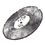

| 荒野（こうや） 16歳 恋しらぬ猫のふり | |
| 桜庭一樹 | |
| 文藝春秋 (2012) | |
文春ウェブ文庫
荒野
16歳 恋しらぬ猫のふり
桜庭一樹
荒野 16歳 恋しらぬ猫のふり
愛しさは、さびしさ。
あんなにたくさんの、ぽわぽわした感情に日々、さいなまれていたというのに。大人になったいまも、憶えていられるのは、はたして、どれと、どれと、どれだろう。
忘れ去られてしまったのは、どの愛しさ、どのさびしさだろう。
それらは、この世のどこかをいまも、漂流しているのか。
透明なあぶくのように、生まれては、消えていった、ものたち。
時が流れて。ときには、ぼんやりしている荒野自身をも置き去りに、流れて。振りかえると、あの季節は、あっというま。瞬きするほどの一瞬の日々よ。
あの少女はずっと、いる。
遥かな荒野にたたずんでいる。
風が、吹くと、少女の髪が、揺れ......。
──十五歳。
時は、流れた。
夜の空気を切り裂くように、赤子が、泣いている。
よくもそんなに、身も世もなく泣き叫べるものだなぁ、と不思議になるぐらい、胸を打つ切実さで幼い妹が、今日もまた、夜を震わせる。
荒野はお布団の中で、うーんと寝返りを打った。
夏に近い、まだすこぅし湿った季節。襖の向こうには廊下があって、そのまた向こうに、鬱蒼とした暗い庭が海のように広がっている。いまはきっと夜の闇に黒く染まって、生温かい、湿気った風にぐらぐら揺れているのだろう。
生まれてまだ一年も経たない、ちいさな妹の名前は、鐘、だ。
荒野は思わずお布団の中で「鐘ちゃん、鐘ちゃん。泣きやめ、泣きやめ......」と、小声で歌ってみた。けれど、廊下の奥にあるパパと蓉子さんの部屋から聞こえる、妹の泣き声は、いっこうにやむ様子がなかった。だんだん、人間の赤子じゃなくて、断末魔の動物の鳴き声みたいな気がして心配になる。
「蓉子、さぁん......」
荒野が目をさすりながら、水玉柄のパジャマもくしゃくしゃで廊下に出ると、ちょうど奥の和室から、妹を抱いた蓉子さんが、おぉ、よしよし、とつぶやきながら出てきたところだった。
暗い庭から落ちる青白い月光が、廊下の床を水面のように照らしている。
「あらっ、起こしちゃったわねぇ。荒野」
「ううん......。鐘は、お腹空かしてるの？」
「お腹はいっぱいよ。ご飯は食べたもの。おしめも替えたし。ただ、泣いてるの」
「そっかぁ」
「だって、赤ちゃんなんだものね」
蓉子さんは夢見るようにささやいてから、ひそやかな仕草で、和室のほうを振りかえった。
「正慶さんは、起きないわ。あの人、子供の泣き声で起きたことがないの」
わずかな、恨みのこもった声だ。
「パパって、マイペースな人だからねぇ」
荒野は大人どうしみたいな親密さでつぶやくと、そうっと両腕をさしだした。
「わたしも抱っこする。おいで、鐘」
その身に火を孕んでいるように熱い、赤子のからだをおっとっと、と抱いて、この世の終わりみたいに泣き続けるちいさな顔を覗きこんだ。
ちいさなちいさな山野内鐘は、蓉子さんとよぅく似ていた。日本人形のように整った、でもどこか控えめな顔。だからお姉ちゃんの荒野とも、ちょっと似ている。
荒野は、さいきん飼い慣らしつつある接触恐怖をぐっと飲みこんで、妹を思いきって抱きしめた。
顔を上げると、蓉子さんは幸福でたまらないような、とろける微笑を浮かべて、赤子をじいっとみつめていた。妊娠中は土気色に乾いて、醜いそばかすの散っていた顔も、いまはしっとりと濡れたような艶を得て月光に輝いている。そんな最近の蓉子さんを、だけど荒野は、すこし視野が狭くなったようだな、と気づいている。女、として、パパのことを前ほど気にしなくなったし、家の外で起こってることについてはあまり悩まない。
蓉子さんにとってこの世はまるで、とつぜん、母と赤子だけの、さみしい真っ白なシェルターになったようだ。
「あらっ、泣きやんだ。鐘は、お姉ちゃんが好きなのね」
すごく名誉なことのように、得意そうに蓉子さんが宣言するので、荒野も思わず微笑む。
「そうだよぅ。ね、お姉ちゃんが好きだよねぇ」
「荒野、子供は夜更かしせずにもう寝なさい。ほら、鐘おいで」
赤子を強引に抱きもどしながら、蓉子さんが急にママ・モードになって厳しく言った。荒野はうふふと笑って、
「夜更かしぐらい平気だよ。もう高一だもん」
「おやおや。あなたはまだまだ子供ですよ。ほら、寝なさい」
蓉子さんは、水面みたいにつめたく輝く廊下を、滑るような足取りで遠ざかっていく。暗い庭から、気の早い夏の虫がリ、リリリリ、と短く鳴く。荒野は肩をすくめて音もなく自分の部屋にもどると、襖をぴしゃんと閉めた。お布団にもぐって、あくびを一つ。
すぐにまた眠りに落ちた。
寝る子は、育つ。
十五歳の荒野だって、まるで赤子と競争するように、いまぐんぐん育っているところだ。

翌日の、朝。
「おはよう、君......」
寝坊気味に起きた荒野が、ばたばたと廊下を歩いていたら、いつのまにか和室のちゃぶ台の前に座ったパパが、いかにもぼんやりした風情で声をかけてきた。
「あっ、おはよ。パパ」
ちいさな妹が、夜な夜な眠りを切り裂くから、山野内家の面々はずうっと、ちょっとだけ寝不足気味だ。女の人に大人気の恋愛小説家であるパパは、いつも夏の夜の蜻蛉みたいにぼうっとしている。蓉子さんは、赤子が泣いても正慶さんは起きないというけれど、それなりに眠りが浅くなっているのだろう。その、ぼうっ、とした感じ、が前よりも強くなって、朝はいつも、着物の襟もよれたままの姿でおおきなあくびをかみ殺している。
荒野は首をかしげてパパを眺めてから、洗面所に飛びこんで、眼鏡を取って、顔を洗って、ふかふかの白いタオルで拭いた。
友達の中でもいちばんの美人、江里華ご推奨の、へちまの化粧水をコットンにひたして、額から、目の周り、ほっぺた、とぽんぽん叩いていく。よくわからないまま見よう見まねでやっているだけだけれど、じつはちょっと、なぜか楽しい。前髪をそろえた、自慢のまっすぐな黒髪は、高校生になってからは結ばずに背中にゆったりと垂らしている。
どこからかまた、妹が泣いている声がする。
山野内家に住み着いた泣きお化けみたいに、赤子がいつも家のどこかで叫んでいて、でも、あんなにちいさなからだで声だけを響かせるから、どこにいるのかよくわからないことが多い。
荒野は台所に飛びこんで、蓉子さんがつくりかけのまま放置したらしき、出汁を入れた鍋を覗きこんだ。弱火にかけて、まな板の上にこんもりしている若布を切って、冷蔵庫から木綿豆腐も出してきて賽の目にした。鍋に入れて、味噌も出してきて、とく。
ピーッ、ピーッ。
ご飯が炊けた。
しゃもじで混ぜて、むらして。あと魚も焼いて、お漬物も小皿に適当に盛った。
食卓に並べて、「パパ、食べてー！」と言いながら、いそいで台所にもどって、自分の弁当箱にご飯とおかずをつめる。蓉子さんが用意してくれた出汁巻き卵と、豚肉の味噌漬けとプチトマト。ぎゅうぎゅうつめて、ほっと一息。
赤子はまだどこかで泣いていて、蓉子さんの、おぉ、よしよし、よしよし......と、甘ったるい声も絡みあうように聞こえてくる。
パパと二人で、差し向かいでもそもそご飯を食べていると、急に視線を感じた。ん、と顔を上げると、パパが箸をとめて、眩しそうに目を細め、荒野の一挙一動を熱心にみつめていた。
「どうしたの。パパ」
「いや......。君、いつのまにかずいぶんおおきくなったね」
「えー。そりゃ、赤ちゃんと比べたらね」
「まるで、ときめきのかたまりみたいだ。あぁ、もう十五歳、か......」
パパはなぜか、なにかをあきらめた男のようにため息をついてみせる。荒野は黙ってご飯を口に運びながら、相変わらずキザなお人だなぁ、とちょっとあきれる。
ご飯を食べ終わって、片付けて、弁当箱も鞄に入れた。セーラー服は、高等部に進んだ今年の春、体型に合わせていちど仕立て直したから、新しい制服に特有の、硬くてどこか気恥ずかしい匂いに包まれている。夏服は涼しいけれど、セーラーの部分だけが、君は女学生なのだよと言い聞かせるように、肩から胸にかけてずっしりと重たい。
「いってきまーす」と出かけようとして、荒野はいちど足を止めた。
ばたばたと洗面所にもどり、鏡を覗く。
鏡の中の、不思議、な、せかい。
色白の、日本人形みたいな顔をしたおとなしめの女の子が、いかにも生真面目な表情をして、黒縁眼鏡のレンズ越しに荒野をまっすぐみつめかえしている。
去年までよりすこしほっぺたが瘦せて、それに首も細く、長くなったような気がする。儚く感じるほど白い顎から、かすかな、大人の女の気配。......それはまだ、誰にも内緒の萌芽だけれど。
荒野はじっと鏡をみつめる。
それから、誰もいないから、こっそり......鏡に向かって微笑みかけてみる。
にこっ......！
すこぅし角度を変えて、斜めにして、照れたように唇をほころばせる。
こんなふうに鏡をみつめるなんて、ちょっと前までなかったことだ。鏡に映る自分を観察したり、みとれるなんて、ことは。
でもつぎの瞬間、そんな自分にすごく照れた。荒野はぱっと身をひるがえし、逃げるように洗面所から飛びだした。
「いってきまーす」
もう一回叫ぶと、返事代わりに赤子がどこからかサイレンのような鋭い泣き声を上げた。荒野は玄関の三和土に足を下ろして、白い三つ折り靴下に包まれた足に、ぺたんこのローファーを履き、革製の硬いつま先をトントンとしてから、外に出た。
夏の始まりの、眩しい日射し。
赤紫色をした紫陽花の花がそこここで、ちいさな花火の大群みたいにまぁるく咲いている。露に濡れ、甘く青くさい香気をはなって、眩しい鮮やかさだ。
荒野はもう高校生。
セーラー服からは、朝の匂い。
黒髪を夏の風にたなびかせて、駅までの坂道を元気よく走りだした。
朝露にやわらかく湿ったふるいアスファルトの坂道を駆け足でくだって、深緑の葉が鬱蒼とする円覚寺の横を駆け抜けて、一路、北鎌倉の駅へ。
ぷしゅうぅっ......と、いつものＪＲ横須賀線に飛び乗って、間一髪、背後で閉まったドアにほっとする。
（まにあった......！）
さいきんの荒野はお手伝いでうんと忙しいから、朝はいつもぎりぎりだ。
つぎの鎌倉駅で電車を降りて、黒髪をなびかせ、石畳の道を踏みしめながら歩くと、荒野と同じセーラー服を着た、でも荒野よりもチビの女の子三人組が甲高い声で、
「あっ、山野内先輩だ。おはようございますー」
「ございますー」
「......あっ、うん。おはよー」
荒野はちょっと赤くなって返事をした。中等部の女の子たちはいっせいに満開の笑顔を見せた。萌黄色の二本線は、女学生になりたての一年生の証。セーラーの布をぶかぶかと余らせる、まだ針金みたいに瘦せたからだをそろってぶんっとしならせて、元気よく走りだした。
荒野だって、中学生のときは、高等部の先輩がすごぅく大人に見えたもの、だけれど。
さいきん、友達の江里華は美貌にさらに磨きがかかって目立つ存在になって、いまでは後輩の女の子にもファンが多かった。彼女の連れである、おとなしい荒野もつられて目立って、やがて小説家の娘だと噂になって、中等部の子たちにも顔を覚えられるようになってきた。もっとも、荒野自身は相変わらず、ごくふつうのあまり目立たない子なのだけれど。
まだ丸みがまったくない、やたらに細い十二、三歳のからだを揺らして、女子中学生たちが元気よく駆けていく。
その後ろを、荒野は穏やかに微笑みながら、朝の澄んだ空気を楽しむようにゆっくりと歩く。
学校は相変わらずだ。
いや、変化があまりにもちょっとずつだから、荒野がなんにも気づいてないだけなのかもしれない......。
中学から一貫の高校は、校舎も一緒で、おんなじ制服を着た男女が校庭にも廊下にもひしめいている。セーラーのタイが学年のしるし。荒野がはためかせる淡い浅葱色は、高校一年生、すこしだけお姉さんの証拠でもある。
夏休み直前の教室は、みんなのうきうきした気分が充満して、いまにもボカンと爆発しそうな元気のよさ。中学のときとちがって、成長の早い子は、もう大人に近いからだをむりやり紺色の制服に押しこめている。セーラー服にくるまれたからだが息苦しそうなほど成熟して、胸元も腰つきもどこかなまめかしい女の子もいる。男子もまた、ひげ（......そう、ひげ！）が濃くって、声も野太かったりする。分厚い胸板とすさまじいすね毛のせいで、冗談交じりに、お父ちゃん、なんてあだ名をつけられているやつもいる。
十五歳から十六歳の、四十人ほどがひしめく教室。夏休みを前に、みんなして声もひときわ高まっている......。
「おーい、日直。片付け頼むなっ」
四限の授業が、チャイムとぴったり同時に終わると、歴史教師が、黒板の横の白壁いっぱいに広げて貼った世界地図を指差して呼んだ。男子が一人、「へーい」と返事をして立ちあがった。
頰杖ついて、窓の外に広がる夏の青空と、たなびく白いカーテンを眺めていた荒野の横を通り過ぎながら、
「こらっ、おまえもだろ」
ふざけて、荒野の頭をポンと叩いた。
「うん？ あっ、うん！」
荒野はびくっとしてから、あわてて立ちあがる。
そういや、日直だった。
二人で教壇の前に立って、男子が長い腕をのばして地図の上のほうを外しにかかる。荒野はしゃがんで、下のほう。とくに仲がいいわけでも、気心が知れてるということもないクラスメートだけれど、こういうときには自然と息が合って、あんなに仇どうしみたいだった男子と女子とは思えないほど動きがスムーズだ。
仇どうしだったのに......。
と、不思議な気がする。
黒板を消し始めてからも、男子は上のほう。荒野が一生懸命ぴょんぴょん跳びながら届かないところを消していると、「俺がやるって」と脅すような低い声をかけて、さっさと消してくれる。
そろって窓から上半身を出して、黒板消しをぱんぱんとはたく。チョークの粉にむせる。湿気のこもった蒸し暑い空気に、あぁ夏だなぁと感慨にふけっていると、日直男子が急に、となりでぼやいた。
「ちぇっ、カップルばっかりだよ」
「えっ？」
「ほら、見ろよ。公園かっつうの。学校だっつうの。まったく」
目をぱちくりして、荒野は、窓の外に広がる昼休みの校庭を見下ろした。
確かに彼が訴えるとおりの情景だ。校庭の隅に、一緒にお弁当を広げたりおしゃべりする男女二人組がたくさんいて、どの子たちからも、華やいでいるけどどっかしら刹那的な、つまりは恋の、不思議に甘い空気が醸しだされていた。荒野はふと悠也のことを思いだして、ため息混じりに、
「いいなぁ！ 同じ高校に彼がいるの」
「......色気づいちゃってって、腹、立たない？」
「えっ、立たないよ」
男子はしばらく黙って黒板消しをはたいていた。それから努めてさりげなく、
「山野内ってさぁ、ところでさぁ、湯川と仲がいいよな」
「えっ、うん。いいよ」
「湯川って、彼、いるの」
「いる！」
「......」
男子があからさまにうなだれた。小声で「ちぇっ......」と言っている。荒野は、男子に人気がある陸上部ホープ、湯川麻美と、美少女ぶりで有名な田中江里華と、中学のときからずっとつるんでいるから、こういうシーンには慣れっこだ。知らんぷりして、黙って黒板消しをはたいていると、男子が怒ったような声で、
「ちぇーっ」
「わっ、びっくりした。......うふふ！」
「なに笑ってるんだよ。ちぇっ」
「うふうふ！」
「......なんだかさぁ、気づいたら、周りがけっこう、女と付き合い始めててさぁ」
言われて荒野は、男子と一緒に昼休みの教室を見渡す。
高校生になったとき、一回クラス替えした。だからいまのクラスには、中学からずっと知っている子と、顔だけ知っているけれど話したことのなかった子が混ざっている。男子に言われるまでもなく、この中にもクラス公認のカップルが何組かいるし、付き合い始めてすぐ別れてしまって、早くも友達にもどった二人組もいる。
あのころ......まだ中学生のお子ちゃまのころ、あんなにも強固だった地下の秘密組織......。男子は男子、女子は女子で固まってけっして相容れることのなかった、あの懐かしい組織は、いつのまにか自然解体して、この世のどこかに溶け消えてしまった。いまだって、男子も女子もおおきなグループを作ることなく、カップルはカップル、同性の友達どうしもまた、少人数で集まってお弁当を囲んだり、静かに笑いあったりしている。
恋の秘密も、性の発見も、大勢でではなく、二人きりで共有するものになった......。
そんなふうに変わってきたのだ。
なんて、エロチック。
と、荒野は首をかしげる。
裏切られたように、一人者の日直男子が、ちぇっ、とまたうめく。あの秘密組織のただ一人の生き残りみたいに、孤独そうに、荒野と同じ方向に首をかしげ、また、
「ちぇーっ」
「片付けとくよ。はいっ」
黒板消しを受け取って、荒野が二つとも片付ける。と、背後から「でも俺、山野内にだけは先、越されない予感がするなー。だっておまえ、クラスでいちばんガキっぽいもん」と言われて、ずるっとずっこける。
（いるのに！ 彼！ 荒野はガキではない......）
ぜひ言いたいのに、振りかえったときには男子はもう姿を消していた。仲良しの男子数人と汚れたサッカーボールを蹴りながら、もつれあって廊下に走りでていく。そのボールさばきのおどろくほどのすばやさと器用さに、荒野はきゅっと目を細める。
あんなふうに、ボールみたいに自在に、異性を手玉（ん、足玉？）に取れるようになる、はるか時の彼方の、大人になった日直男子の姿を一瞬、幻視したのだ。スーツに、細いネクタイ。でも口癖だけは変わらず......ちぇーっ。携帯電話を片手に、いろんな異性にこともなくアタックしては、女から女へ、恋から恋へ、心もからだも器用にさばいてゆく......。
旅人みたいにきまぐれな姿。
幻。
未来は、未知の色だ......。
黒板の前で荒野はしばし、白いカーテンを揺らす夏の風と、未来から吹くつめたい風に黒髪を揺らされ、一人きりでたたずんでいる。
「えっ、また、麻美を好きな男子が現る、なのぅ？」
放課後。
六時間目が移動教室でばらばら授業だった田中江里華と、恋人どうしみたいに待ち合わせして、廊下を二人並んで歩いた。放課後という時間になりたての廊下を、忙しすぎる高校生たちが足早に通り過ぎていく。ばたばた走りだした女子の一団が、いかめしい初老の女教師に「こらっ、走らないの！」と怒られてしゅんとする。
叫んだり、どっと笑い声を上げたり、壁にもたれて大人のアベックみたいに寄り添ったりする、それぞれの喧騒の中を、荒野と江里華は顔を寄せあって歩いた。早すぎる時の流れに抵抗するように、ゆっくりと。
「......そうなの。湯川、彼、いるかなぁって」
「いるよねぇ。麻美、もてるもん」
「うん。なんだよねぇ」
「うふふ」
江里華が楽しそうに、鈴が鳴るような笑い声を上げる。
一足先に誕生日を迎えて、晴れて十六歳になった田中江里華は、山野内家に遊びにくるたび、パパに「君は、どんどんきれいになるね。邪悪で素敵な魔法のようだ」と感嘆されるほど、美貌に磨きがかかっていた。......照れもなくそんなことを言えるパパのことを、荒野は最近、ある種の超人かしらんと思うのだけれど、でもその言葉がおおげさじゃないぐらい、江里華は遠くから見てもわかるほど、ぴっかぴかだった。
友達だから、荒野は誇らしい。
でも江里華は相変わらず、ボーイフレンドも......それにガールフレンドもいなくて、ずっと孤高の存在だった。こうやって廊下を一年生の教室がある旧校舎の三階から下に降りていくと、ほら......。
「田中先輩、こんにちはー」
「こんにちはー」
新校舎から駆けだしてきた中等部の女の子たちが、江里華をみつけて足を止め、うれしそうにピョコピョコ頭を下げて挨拶する。江里華は恥ずかしいような怒っているようなへんな顔で、うんとうなずいて、ちょっとだけ足早になる。
校庭の横を通り過ぎて、正門へ。
トラックを走る陸上部の女の子の中でも、ひときわ日に焼けてすらっとしているのが我らの湯川麻美だ。中学生のときは短めだった髪を長く伸ばして、健康的なポニーテールにまとめている。走るたびに、黒い剣のようにするどく髪が揺れている。
麻美は中学のときにできた初めての彼と、高校生になってから別れた。いまはべつの、年上の大学生とつきあっている。恋愛のことは麻美に聞け、が荒野たちの最近の合言葉で、男ってこうよ、と麻美があれこれ語る体験談は、（なにしろとっても具体的なので）たいへんに貴重なものでもある。
「麻美ー」
「おーい！」
二人が飛びあがって手を振ると、走りながら、麻美も元気よく手を振った。ポニーテールがそれだけべつの生き物みたいに左右に激しく揺れている。夏の夕日が眩しい。遠くで鴉が、ぎゅうう、ぎゅううぅ、と押し潰されるようなへんな鳴き声を上げてから、飛び去る。
荒野は江里華と連れ立って、ねぇねぇ、その男子って誰、えっ、言えないよー、かっこいいの、えっと、普通かなぁ、などと言いあいながら正門をくぐって、夕日に濡れる鎌倉の街に向かって歩きだした。
ＪＲ横須賀線で鎌倉から一駅。
北鎌倉の駅で下車して、お屋敷町へのゆるやかな坂道を、荒野は一人で上る。
物憂げな横顔。
女の命の、つややかな黒髪。
......考えてるのはお菓子のことだ。
帰る道すがらに江里華と寄り道した、小町通りのいつものうさまん屋。新発売のマンゴージャム入りのをはふはふして、あまりにも暑いから、ハンカチで汗を拭きながら食べ終わった。苺も杏もおいしかったけれど、ブルーベリーも捨てがたいなぁ、といつまでもうさまんの件で思い悩みながら、鬱蒼たる山野内家の前にいつのまにかたどりついた。
最近、庭師さんを入れて、久しくさぼっていた庭の手入れなるものをやったばかり。季節にかかわらず忘れ去られた荒れ寺の如しだった庭は、区画整理されてそうとうきちんとしている。
崩れかけた古びた石の門に、山野内と荒々しい毛筆の表札。
きれいに刈られた木々の枝から、夏、夏、と狂ったような蟬の声。
木でできた主のいない鳥籠みたいなポストを覗いたら、絵葉書が一枚。悠也から自分宛だったので、思わずスキップしてしまう。部屋にもどるまで待ちきれなくて、その場で読んだ。
学校のこと。友達のちょっとした名言。あと、読んだ本。こんど写真撮ろう、と最後に追伸。
それだけだけれど、楽しい。鞄にしまって、スキップ気味のまま玄関へ。
「ただいまーっ。......あ、しまった」
荒野は元気に張りあげた声を、あわてて飲みこんだ。
玄関に荒野のちいさなスニーカーと、蓉子さんの大人っぽいサンダル。パパの靴。その家族の靴の真ん中に、いかにもバンカラな感じに脱ぎ散らかされたおおきな革靴があった。
荒野がちょっぴり苦手な、あの人だ......。
首をすくめて、抜き足差し足で廊下を歩く。
玄関の空気は湿っていて、ここだけは近づいてくる夏の気配もなく妙にひんやり沈んでいる。廊下を歩きだすと、いちばん奥の仕事部屋から、パパと男の人の低い話し声が漏れてきた。ときどき、クククッと重たい笑い声。首の後ろにちりちりとくるような、空気を野太く震わせる大人の男の声だ。
赤ちゃんは......。
静かだ。
きっと、火のように熱い眠りの中。
荒野は足音を立てないようにそうっと廊下を歩いて、台所に向かった。
と、ちょうど奥の和室から、大柄な大人の男性が出てきた。パパよりすこし年上。もう何年も見慣れた、東京のおおきな出版社の編集長だ。
台所に姿を隠そうとした荒野を目ざとくみつけて、うれしそうに、
「おっ？ 先生の黒猫だ。久しぶりにみつけたぞ」
「こんにちは......」
荒野は台所から首だけ出して挨拶した。
編集長は大股で近づいてくると、間近から荒野を見下ろした。困って、黙ってみつめかえしていると、廊下の奥を振りかえって、
「だいぶ、おおきくなりましたねぇ。先生」
「......なにが」
「黒猫。上のお嬢さん」
「あぁー、そりゃあね」
いかにも気のない様子の返事が、遠くから聞こえてきた。
パパは男の人しかいないときは、いつもそんな感じだ。編集長はうっすらと顔をゆがめてため息をついた。それから気を取り直すように、笑みをたたえて、
「そうだ、黒猫ちゃん。こんど、おじさんと二人でふぐでも食べに行こうじゃないか」
「えー、ふぐ......？」
荒野は、たぶん食べたことない、と首をかしげながら聞きかえした。おじさんという人種の考えていることも、行動も、荒野にはまだぜんぜん予測できない。中学生のころなら、イヤッきらいっと叫んで部屋に飛びこむところだけれど、荒野はわからないなりに、首をかしげたまま、とりあえずにっこりしてみた。でもすこしだけ後ずさる。
そのとき廊下の奥からパパが姿を現した。
蜻蛉みたいな、儚い姿。だいぶのびた髪を、最近では後ろでひとつに結んでいる。忙しいせいか白髪が増えて、灰色の長い髪と、剃り残しの多い薄いひげ。目の下にこまかなしわが増えて、疲れ、と、加齢、が、色気につながるという高度な色男ぶりを発揮している。
ちょっとだらしなく着崩した着物の裾が、歩くたびにはだけすぎなぐらい乱れる。暗めの蛍光灯に、まるで明け方の夢みたいにうつくしく照らしだされて、廊下がパパのための即席舞台になる。荒野は大人の女の視線をいまだけ借りるように、じっとパパを眺めて、おぉ、これは素敵な男なのだ、愛されるのも無理はない、と理解してみる。
近づいてきたパパは、向かいあっている娘と編集長を、不思議そうに見比べた。
それから、いつも潤みがちの寂しげな目をきゅっと細めて、長い時間をかけて荒野を観察した。
沈黙を破るように編集長が言う。
「......先生。黒猫のお嬢さん、幾つになったんですっけ」
「十五だよ。君ねぇ、ぼくの娘の年ぐらい覚えておいてくださいよ」
冗談なのか、本気なのか。パパが気分をそこねたようにそっぽをむきながら、言う。編集長は気にせず、あっはっはと笑って、
「なぁんだ、十五かぁ。じゃ、まだまだ子供だなぁ。ふぐデートに誘うには早かったな。ね、黒猫ちゃん？」
「......だから君はだめなんだ。よく、見なさいよ」
パパがさらに不機嫌になって、低い声でうめく。
最近ずっと、蓉子さんが赤ちゃんで手一杯だからか、パパが台所に入ってきて、自分で薬缶に水を入れて火にかけ始めた。お茶っ葉を探して、あちこちの扉を開ける。開けた扉はもう開けっ放しで、男の人にしては瘦せた両腕で、かんしゃくを起こしたように乱暴に台所中を引っ搔き回しながら、
「よーく、見なさい。女を見なさい。ちゃんと、見なさい。君」
「はぁ？ あの先生、なにを探してるんですか」
「煎茶の缶ですよ。あのね、君。女というのはね、君」
どうやらパパはほんとうに不機嫌そうだ。荒野がちいさな引き出しから使いかけの煎茶の缶を取りだして、「荒野が、やるよ」とささやいて手早く急須と湯のみを並べると、パパは急に手を止めた。
両腕を胸の前で組んだ。
そして、咎人を告発するような酷薄さで、
「恋知らぬ」
「はぁ、先生」
「恋知らぬ、猫のふりなり」
パパはちょっと吐息混じりで、女みたいに色っぽい声を出した。
「〝恋知らぬ、猫のふりなり、球遊び〟なんだよ、この子のこれは」
「ほぉー」
「......正岡子規、ね。あーあーあ」
目の下のしわに、ぐっと暗い影が差す。
パパはお茶を荒野に任せて、そのままぷりぷりして台所を出ていく。
荒野は、もういっちょ前に恋をしていることを、身近にいるおとなのおとこにとっくに見抜かれていたことに気づいて、恥ずかしさに全身がカッと熱くなった。
ぼんやりしているようで、パパはやっぱりあなどれない人だ、と嘆息をつく。そして、どうして恋をしていることが、家族には......とくに親には、恥ずかしくって知られたくないのかな、と不思議になる。小学生のころや中学に入りたてのころ、学校であったことやその日考えたことを、下校して、優しい他人、だった若い家政婦さんに小鳥みたいにまとわりつき、なんでもかんでも話して聞かせていた昔の自分を、
（こどもっ）
と、思う。
秘密がないのが、あのころのちっちゃな荒野。
これからどんどん、パパにも蓉子さんにも語ることのない、静かで確かな気持ち、が降り積もっていくのかな......。
荒野は首をかしげながら、お盆にお茶を載せて、奥の仕事部屋に運んでいく。墨でおおきな件の絵が描かれた古い襖を開けると、パパは知らんぷりして仕事机に向かっていた。ありがとうも言わない、拗ねっぷり。代わりに、編集長がいそいそと名刺を出して、
「ありがとね。おっ、そうだ、黒猫ちゃん。おじさん、肩書きちょっと変わったの。見る、名刺」
「はぁ」
出されたまっしろな名刺には、編集局長、と書いてあった。「一字増えた？」とつぶやくと、「そうなの。そうなの」とうなずいている。編集長と編集局長、どっちがえらいのか荒野は、知らない。でもなんとなく感心する。パパをちらっと見ると、いかめしく腕組みしたままあくびを嚙み殺している。
「だから、ほんとはこんなところでのんびりしてる場合じゃないんだけどねぇ」
「こんなところとはなんだ、君」
「ははは。......囲碁でも、やりますか。先生」
「いいね。君」
囲碁盤を取りだして、二人でいそいそと石を並べ始める。荒野は、編集長改め編集局長に、
「夕ご飯、食べて、いきますか」
「ん？ それ、誰がつくるの」
家の中に耳を澄ます。
誰がどこにいるのか。いまどんな状態か。心のセンサーでざっと確認する。すこし前まで蓉子さんだけの特殊技能だとばかり思っていたけれど、家の女である荒野も、いつのまにかその妖怪っぽい技を身につけつつあった。
パパは、ぼんやり。つまりいつもどおり。
蓉子さんは......気配がない。きっとちいさな山野内鐘といっしょに、二人ぼっちの白いシェルター。
「荒野がつくるの」
と、胸を張って答えたのに、
「うわーっ、じゃ、やめとこう。一局、終わったら東京にもどりますよ」
がっはっは、と家中に響くような笑い声を立てられて、荒野はやっぱり、おじさんなんてだいきらいっ、と思う。ふくれっ面になって、仕事部屋から退散した。
北鎌倉の夏は、湿気になにもかもが濡れて、咲きほこる桔梗の花もどっこいしょと重たげな夏だ。
その週の日曜日。荒野はいつもとちがうちょっと大人びた服に着替えて、午前中のうちに家を出た。
スカートはプリーツ。ブラウスは淡いピンク。
今泉台のゆるやかな坂道を、駆けるように軽やかに下ると、スカートの裾が夏です夏ですっとはしゃぐように、細かく揺れる。
丸いポシェットを片手に元気よく、駅まで急ぐ。ＪＲ北鎌倉駅の近くにたどり着くと、年配の観光客がたくさん溢れていた。観光バスが停まっていて、わらわらと降りてくる。
その人混みを抜けて、弾む足取りで駅へ。改札を抜けるともう、鎌倉が遠のいていく気がした。
今日はデートだ。
「待った？」
鎌倉から、ＪＲ横須賀線で東京まで。
一時間半後には、荒野は東京の後楽園駅にたどり着いていた。すごい人混み。空気は乾いている。東京のこの、埃っぽくてざわざわして、いろんな人種がうごめき続ける、坩堝、な感じが荒野はじつはけっこう苦手だ。
「......待ってない。いま、きた」
首を振ると、待ち合わせの相手──神無月悠也は、あぁ、そう、といつもの相づちを打った。
悠也は黒いシャツに、ジーンズ。お尻のポケットに文庫本が一冊。
この一年でいやになるぐらい背が伸びて、荒野と並んでも、一瞬、同い年には見えない気がする。声も低くて、いつもの、あぁ、そう、にも最近、相手のお腹の底にズンと響くような不思議な重さがある。コンタクトレンズに変えたから、銀縁の眼鏡はもうかけていない。からだもすこしずつ胸板が厚くなってきて、あのひょろりとした少年体型と、少年だからこの世に居場所がないと言いたげな寂しい気配は、急速に、過去という名の記憶の彼方へ遠ざかりつつある。
荒野のほうは背も伸びないし、まっすぐな黒髪もずっとおんなじ長さだから、雰囲気は中学のときとあまり変わらない。だから、並んで歩きだすとなんだか不思議な感じがした。
若者たちはいっしょに成長しているようでいて、ほんとうはそれぞれが別個の、ちっちゃなタイムマシーンに乗って、ばらばらな未来に向かって飛んでいるのかもしれない、なんて......。
爆心地のような子供時代から、放射線状に散らばり落ちる、それぞれの未来の、風景......。
それにしても東京の夏は、影が、濃い。途方もなくたくさんの坩堝な人々に汚されたアスファルトに、くっきりと黒い荒野の影が映っている。となりの悠也の、影がすごく長くて、影だけ見ていると置いていかれそうで思わず荒野は早足になる。
悠也が東京の全寮制男子校に進学して、約四カ月。悠也が鎌倉にもどってくるか、荒野が東京にくるかして、一緒に出かけるのは月に一回か、多くて二回というところだ。いちおう恋人どうしと言ってよいのだろうけれど、二人とも、どういうのが恋人なのか、わかるような、まだよくわからないような。でも顔を合わせるとうれしいし、一人のときは、気づくと悠也のことをぼーっと考えている。
これが恋なら、あのころ、うっかりしっぽを踏んづけた荒野に、いきなり吠えかかったり、脅したり悲しませたりする一方だった、未知なる恋という生き物は、いつのまにやら荒野という女に飼いならされて、すぐそばでのんきにまどろんでいる、ような......。
「入ろうか」
「うん！」
後楽園の遊園地に入ると、若いカップルと家族連れがたくさんいた。乗り物に乗って、売店でソフトクリームを食べて。それからぷらぷらと歩いて、地下鉄だと一駅の神保町に向かった。
遊園地では荒野がはしゃいでいたけれど、神保町にきたら、悠也が古書店に吸いこまれてはうれしそうに嘆息をつく。
ちいさな店に、蟻塚のように古書が積まれて、その向こうに置物みたいなおじいさんの店主が座っている。
「あ......」
ふるい書物の匂い。
モノクロームの不思議な挿絵が躍るヨーロッパの本をみつけて、汚さないようにそうっとめくる。横から悠也がちらっと見て、
「ドレの絵だ」
「どれ？」
「十九世紀に、娯楽小説に挿絵をいっぱいつけるのが流行ったんだよ。バルザックの『風流滑稽譚』とかね。......それ、おもしろい？」
「おもしろい......」
しばらく店内をうろついていたら、悠也がちいさな声で、
「飽きない？」
「えっ、ううん」
「そう。よかった」
ほっとしたようにうなずいて、また悠也も、蟻塚のように天井近くまで積まれた本たちの向こうに姿を消す。
しばらく夢中で本を見ていたけれど、ふと悠也のことを思いだし、せまい店内を歩く。本の塚の向こうにいる横顔をみつけて、しばしみつめる。
ふるい本の一冊を手に取って、欲しそうに、眉間にしわを寄せて考えこんでいる。
端整に整ったその顔が、一瞬、出会ったあの日の横顔と重なって見える。
（そう、いえば......）
荒野は記憶をひも解く。
朝の通学電車で最初に会ったときから、この少年は一人静かに、ふるい文庫本をめくっていた。愛読書だったらしいあのときの本は、アメリカに旅立つときに、まるで自分の代わりだというように荒野の胸に押しつけて、いった。
パパの愛人のことで荒野が泣いているとき、ぼそぼそとなぐさめてくれたあの日も、同じ本を片手にしていた。
〝世界とは？
人間とは？
青春とは？
そして音楽とは？〟
視線に気づいて、悠也が顔を上げる。みつめあうと、険しい顔をしていた悠也が、ふいに表情を、ほどいた。またふつうの十五歳の少年にもどって、あどけなく荒野をみつめて「行こうか」とつぶやく。
「うん。......それ、買わないの」
「うーん。買えない」
「あらっ」
「どうしてだろうね。欲しい本は、どれも高いんだ......」
悠也がため息のようにちいさくつぶやくと、店の奥で置物のように微動だにせず座っていた、荒野よりちっちゃなしわしわのおじいちゃんが、クッ、と笑った。
「またいらっしゃいよ」
「はーい」
荒野はおじいちゃんに返事をする。悠也は黙って、うんとうなずく。
一歩、外に出る。灼熱のアスファルトから立ちのぼる、もわっとした熱気が二人のからだを包みこむ。
「レコード屋も寄っていい？」
悠也が小道の向こうのほうを指差して聞く。
「うん、いいよ」
「掘り出し物がないかなぁと思ってさ」
「寮で聴けるの」
「聴けない。持ってるだけ。鎌倉にもどったとき、好きなだけかけるよ」
悠也はすこし怖い顔をして言う。
いつのまにか手を繫いでいる。繫ぐとからだが近くなるから、悠也の声も、すごく近くで低く響く。
荒野が話すたびに、悠也がからだをかたむけるようにして、片耳を荒野の唇に近づける。荒野のほうは、甘えるようにのびをして話す。
ここまでぴったりさせて話す相手は友達にも家族にもいないから、荒野は、恋、という特殊な人間関係をかなり奇妙に思う。
「学校、どう？」
「すごく厳しいよ。軍隊みたいだ。朝の起床から夜の自習時間まで、なにもかもきっちり決まってる」
ものめずらしいから、いろいろ聞いてしまう。
「鎌倉にいたときとも、アメリカとも、だいぶちがう生活なんだね」
「うん、まったく逆だよ。奇妙な感じがする。だけどぼくは変化することそのものも好きだし、だから、けっしていやな感じじゃないよ」
「ふぅん」
「アメリカは......」
悠也は夢見るような口調で言う。
「大地が広くて、新しくて、いろいろあるのになんにもないようなへんな国で、だからなんだか、自由を感じた。自由ってわかる？」
荒野は首をかしげる。
「......つまり、荒野にいること？」
「ふっ」
「当たった？」
「......すこし、ね」
レコード屋にふらっと入る。
たちまちピアノの激しい音色の洪水だ。荒野はおどろく。
大人ばかりの店内をゆっくり歩く。慣れた手つきで、山とあるジャズの古レコードを漁ってはまた通路を歩きながら、悠也が話し続ける。
「わけがわからなくて、覚えたての、自分流にブロークンな英語で、いろんなことを切り抜けて。だけど切り抜けられないこともあるし。意志の疎通だけでたいへんで、生きてることさえ怖くなる夜もあって。だんだん新しい友達もできて、落ちついて勉強ができるようになって、それで......」
「うん......」
「気づけば、母も遠い。友達もみんな海の向こう。ただ、見知らぬ巨大な街に自分が立ってるだけ。暮らして土地に根を張るのとはちがう。ただ、立ってる。だけど、街こそ荒野だ。荒野こそ自由だ。アメリカにきてよかった。そう思った」
お目当ての一枚をみつけたらしく、悠也はレコードを穴が開くほどみつめて「あぁ、探せばあるもんだな......」とつぶやいた。
「買うの」
「ん！」
レジに向かう。
店内には激しいジャズが暗い水のように流れている。
レコード入りの袋を鞄に入れながら、悠也がもどってくる。
ドアに手をかけたとき、音の洪水が二人のからだを押しだすように高まった。
穴倉みたいな地下の喫茶店に入って、悠也はアイスコーヒー、荒野はアイスミルクティーを頼む。
喫茶店を出るともう夕方になっていた。地下鉄の駅に降りる暗い階段のところで振りかえって「じゃ」と言うと、悠也もうなずいて、
「うん......」
すっと手をのばして、荒野の髪に触れた。
優しい、手つき。
三年前の春には、乱暴に、ぎゅむ、と髪の束をつかんで引っぱったあの少年が。
おとなのおとこみたいな、柔らかくいとおしむような手つき。
──時は流れた。
荒野はぞっとする。
自分も手をのばして、悠也の頰にそっと触れてみる。でも、大人の通行人が何人か、およっ、初々しいカップルだなというようににやにやして通りすぎるので、恥ずかしくなって、二人同時にさっと手を引っこめた。
「じゃあ」
「うん、またね。悠也」
「電話する......」
地下鉄の階段を駆け降りると、自分の靴音が、ごろごろと不吉にどこかへ落ちるタイムマシーンの音みたいにおおきく、暗く響いた。
ぽん、ぽん、ぽんっ、と、庭の飛び石を駆けるような早さで時間が流れて、もう、夏休み。
一学期最後の日は半ドンで、荒野たちは熱風みたいな空気を切るようにして、正門から街に飛びだした。
今日は部活も休みで、麻美も一緒だ。日焼けした肌にポニーテール。三人組の中でいちばん背も高くって、小町通りのわやわやした人混みでも、
「新発売の、苺クリームあんみつがあるよ！」
「んっ、どこどこ」
「ほら、あの看板。こっちこっち。二人とも」
女性の観光客の頭上を越えて、すばやくいろいろみつけてくれる。荒野と江里華は、人混みをかき分けていく麻美の後ろをすましてしずしずと歩く。物怖じしない麻美は、お店に着いたら「三人っ」と指を三本立てて、窓際の席を無事、確保。
そのくせメニューを開いたら、ぜんぜんべつのあべかわ餅と冷たい緑茶のセットなんて頼むから、荒野はずるっとこけて、
「あれっ、苺クリームあんみつは？」
「荒野のを一口もらうー」
「わたしもそうしよ。じゃ、わたしはお団子三種類が三つずつの、このセット」
江里華までそんなことを言いだすので、荒野はいかがなものかと首をかしげながらも、でも食べたいので、
「じゃ、わたしは苺、クリーム、あんみつ......。ちぇっ」
「やっぱりね」
「やっぱり、やっぱり」
麻美と江里華がうなずく。
中学入学と同時にできたこの三人組も、もう三年以上のおつきあい。お互いの考えていることや行動のパターンがなんとなく身にしみこんでいる。なにかする前に予測がつくこともしばしばだ。
運ばれてきたデザートを、慣れた調子でわけあう。並んで座る荒野と江里華が、そろって巣の小鳥みたいに口を開けると、麻美がそれぞれの口に一枚ずつ、薄いあべかわ餅を投げこんだ。
もぐもぐと食べている間に、麻美があんみつに箸をのばす。江里華ももぐもぐしながらこっちにフォークをのばしている。
「夏休み、どうするの」
「わたしは彼と旅行」
麻美がちょっとわざとの、はすっぱな口調で言う。荒野と江里華が揃って首をかしげる。
「わたし、空いてる。三人で遊ぼうね」
江里華がお団子をせっせと分けながら言う。うんうん、と残りの二人がうなずく。
「荒野は家のお手伝いで終わりそうだなぁ」
最近、とみに増えている気がする家事の負担のことを考えて、荒野が気弱につぶやくと、麻美が目をぱちくりした。
丸い団子を楽しそうにつっつきながら、
「荒野んちはばたばたしそうだよね。だってほら、お父さんが活躍してるし」
「活躍？ 誰が」
「山野内正慶。ほら、なんとかって、恋愛小説に贈られる賞の、候補に入ってるじゃない」
「えっ、知らない」
江里華もびっくりして、「そうなのぅ、すごいね正慶さん。でもなんの賞？」と言うので、麻美は顔を真っ赤にして考えこんだ。「えーとえーと、なんて賞だっけ。えーとえーと。わかんない」と一生懸命、詳しいことを思いだそうとするのだけれど、出てこない。
甘味屋さんを出て、駅前にあるちいさな本屋さんに寄った。雑誌が並ぶワゴンが道路にはみだしていて、ゆるやかな坂道を、いまにも落っこちていきそうな危なげな角度で止まっている。中に入ると薄暗くて、どこか埃っぽい匂いがする。華やいで飛びこんできた高校生三人組に、壮年の店主が、なにごとかというように読みかけの雑誌から顔を上げた。
「これ、これがね、なにかの賞にって、たしかうちのお母さんが......」
麻美が本を指差した。山野内正慶の恋愛、というか性愛小説『涙橋』がどんと積んであった。
うちの家計はこれに支えられているので、荒野は思わず本を拝んだ。「なにやってるのー」とからかわれて、目を開ける。
帰り道。
「知らなかった。パパ、なんにも言わないんだもん......」
駅までのんびり歩きながら言うと、江里華が不思議そうに、
「荒野んちって、そういう話、しないの？」
「読んじゃだめ、って」
「へぇー。......でも、わかる気もする」
江里華がすこし陰のある声で言うので、あれっ、江里華は読んだのかな、とピンとくる。
はるか昔に、ほんとうは一度だけ読んでしまったパパの本を思いだす。荒野が大好きだった家政婦さんは、飄々として静かな印象だったけれど、パパの本の中で、嫉妬して荒れ狂う女に姿を変えてしまった。いまでもあの人......奈々子さんの印象、つまり人間性とでもいうものは荒野の中で変わらないけれど、でも一度読んでしまったものもまた、消えない。致死性の毒が回って、心にねっとり張りついて膿むような、おかしな傷を残している。
パパはいま......。
誰のことを書いているんだろう。
『涙橋』は......誰の涙なのか。
その昔、本人の成長によっていまはいなくなってしまった、この世に居場所のなさそうだった幻の少年がつぶやいた言葉。
「小説もきっと、ハングリー・アートなんだよ」
「この世の大事なものを犠牲にしなきゃ、その場所には立てない──」
「さすが、ハングリー・アートの子供」
それを思いだして、だけどあまりにも昔のことなので目眩がして、遠い目になる。
日射しがきらめき、刃物のようにストンストンと降り落ちてくる。
家に帰ると、相変わらず人の気配がなくて静かだった。荒野は自分の部屋で制服を脱いで、ギンガムチェックのワンピースに着替えた。
ワンピースは木綿でできていて、丈夫でかわいくて、洗っても洗ってもピンと新品みたいなままだ。中学生のとき蓉子さんにつくってもらったもので、夏になるとこれを出してきて着ることが多い。
台所に入る。朝ご飯の洗い物が流しに積んだままになっている。荒野はそれを手早く洗って、冷蔵庫にあるもので簡単にチャーハンをつくった。冷蔵庫の中には離乳食もあって、蓉子さんが、そっちはすごくがんばってる、のがわかる。
パパの書斎の前に「ご飯、置いとくね......」と言いながら、チャーハンと麦茶のお盆を置いておく。蓉子さんを探すと、家の中ではいちばん涼しい和室にタオルケットを敷いて、鐘といっしょにまどろんでいた。
ちゃぶ台にラップをかけたチャーハンを置いて、そうっと退散する。かすかな寝息が聞こえるけれど、どっちが赤ちゃんのでどっちがママのかよくわからない。なまぬるい、母乳のようなまどろみは液体になって部屋をとろりとろりと満たし、永遠を感じさせる充足をもたらしていて、荒野はふっと......首をかしげる。
物心ついたころから、この家にずうっとあった、あの気配。女の人の、危なくて、鋭敏で切ない気配。あれらがいまはどこにもないことが妙に思える。
もとは、荒野のママがいた、らしい。
その人がある日、病気で亡くなってから、家政婦の奈々子さんがやってきた。
離れにもひっきりなしに女たちがやってきたし、パパは外でも彷徨う男でい続けた。
三年前の夏、蓉子さんがやってきて、台所の鍋や食器や居間の引き出しの薬箱と一緒に、女たちの気配を追いだしてしまった。そうして、家は、神無月蓉子という女でむせるほどに満たされた。
そんなふうに、いつの時代にも、あんなにも家に充満していたはずの女たちの気配が、最近では跡形もなく、やたらと静かなのはなぜだろう。
（でも、あれはいなくなったんじゃない、気がする......）
そう考えてみる。
（だって、あんなに強かったものが、かんたんにいなくなるはずがない......）
それはきっと、いまはただ、うっかり眠っているだけなのだ。
なにかのきっかけで目を覚ませば、また吊り橋みたいに古い家をゆさゆさと揺さぶり、少女を畏れさせる......。
「あら、いい匂い。なにこれ、荒野スペシャル？」
のっそりと起きあがった蓉子さんが、荒野を見上げて微笑む。
「チャーハン。残り物のね、野沢菜とか入れた」
「とか、が不安だけど、食べてみるわ。ありがとね」
「離乳食も持ってこようか」
「ん。お願い......」
蓉子さんはとろんとした目を細めて、また微笑む。化粧っけがなくて肌も乾いていて、女っぷりは遠のいている。
離乳食を温めなおして持っていく。それからお役ごめんになってようやく、縁側から飛びだして離れに向かった。
離れは静かだった。
いやになるほど、一人ぼっち。
悠也が一人で使っていたころは、畳の上に文机と、座布団。本棚に難しそうな文庫本とレコード。蓄音機がでんと置かれたきりだったけれど、いまは蓉子さんが荷物置き場にしてしまって、お歳暮の箱や使わない家具が積まれて雑然としている。
離れの、天井も低くて窓も一つだけのちいさな部屋は、荷物の多さもあってか、穴倉にこもっているみたいでなんだか落ちつく。一人きりで畳に座りこんで、友達から借りたばかりの漫画の最新刊をめくる。
あんまりおもしろいから、声を出してくすくす笑ってしまう。これ返すの、夏休み明けだなぁと思ったら、急に、おぉっ明日から夏休みだ、と実感する。
......それにしても、落ちつく。
中学のときは荒野は、縁側で寝転がってのんびりしていることが多くて、いまよりも家族と一緒に過ごしていた。いまは赤ちゃんがいるから、というのもあるけれど、一人の時間がより多く必要になったのだ、と自分では思っている。
独り立ちして、大人になっていく準備かもしれない。荒野自身は気づいているけれど、家族はまだそんな変化に無頓着でいる。
それにしても......。
と、いまから二年も前に親元を離れ、一人で海の向こうに旅立った、冒険者たる神無月悠也のことを思う。
少年のほうが、あのころ、先に大人になっていたのかもしれない、なんて......。
文庫本を片手に、ぐんぐんと遠ざかっていった細い背中......。
それを思いだすと、懐かしくて、ちょっと切ない。
くすくす笑いながらも、胸が痛くて、荒野のこころはあっちにこっちに忙しい。
変化が訪れたのは、その数日後のこと。
夏休みだから悠也が帰省してくるというので、いないあいだにうっかり荷物置き場にしていた離れを、母たる蓉子さんがあわてて片付けた（なにしろ山野内先生の家には、お歳暮や贈呈本が多い。置き場を探すと、ついつい......なのだ）。
置き場がないわ、と庭を横切って、縁側から荒野の部屋に持ってこようとする。
荒野は襖の前に立って、断固阻止した。
蓉子さんは機嫌を悪くして、
「反抗期？」
「ちがう！」
「その服だって、わたしがつくってあげたのに......」
関係ないことを言って、哀れを誘うように肩を落とす。その手には乗らない、個室の自由を守らなくては、と荒野が断固、反抗していると、玄関のほうで来客の声がした。
「ごめん、くださいー」
「くださいー」
「あれっ。おーい！」
どうやらずいぶん大勢だ。荒野は首を伸ばして玄関のほうをうかがいながら、
「ほら、お客さんだよ。蓉子さん」
「荒野、出てちょうだい。わたしお化粧してないんだもの」
「荒野もしてない」
「......強情っぱり」
「......」
と、どこかで赤ちゃんが急に大声で泣き始めた。
まるでサイレン。
蓉子さんはようやくあきらめて、荷物を抱えたままで縁側にもどっていった。ほっとして、荒野は廊下を小走りに玄関に向かった。
スーツ姿の大人たちが、三和土に上がって、そろって首を長くして家の中を覗いている。「どなた」と聞くと、大人たちは揃って笑顔になった。
「おぉ、黒猫のお嬢さん。おじゃましますよ」
おじさんの一人がなぜだかうれしそうに、昼間っから日本酒の一升瓶を持って揺らしてみせる。となりのお兄さんはアタリメやピーナツの入った袋を抱えているし、一人だけいる女の人は、共犯者のような笑みを浮かべて、
「女の子には、これでしょ」
「わぁ！」
東京で有名な、並ばないと買えないという噂のシュークリームの大箱を持ちあげてみせる。なんだかよくわからないが、シュークリームがあるので、荒野は弾んで、
「いらっしゃいませ！ いらっしゃいませ！ 父は、いませんが」
「いやいや、いるって。さすがに今日は、居留守、使わないだろ」
「ん、今日？」
大勢の大人をとりあえず先導して廊下を歩きながら、荒野は首をかしげた。
パパが仕事の話をなにもしないから知らなかったけれど、どうも今日は、こないだ麻美が教えてくれた、恋愛小説に贈られる賞とやらの選考会当日であるらしかった。電話がかかってくるのを編集者とともに待つ、というイベントになるらしく。
眠そうな顔で仕事部屋から出てきたパパは、シュークリームがどうの、と興奮してしゃべる娘の声にしばらく聞き入ってから、ようやく思いだしたように、
「あぁ、今日か！」
「日本酒とシュークリームがきた」
「......とりあえず、ぼくの部屋に通して。あとはみんな勝手にやるだろうさ」
どやどやと入ってきた編集者たちが、荒野にあれこれと指示してグラスや皿を出させ、さっそく酒盛りを始めた。選考会という言葉は深刻な響きなのに、なぜだかみんな楽しそうだ。
「季節外れのお花見みたい......」
と言うと、荒野にはおなじみの編集局長が、
「まぁ、そんなものだよ。こういうのはね、気楽に。飲もう飲もう」
「荒野ちゃん、わたしお酒飲めないの。お紅茶いただける？ 荒野ちゃんも、奥様もご一緒に」
若い女性がてきぱきと指示する。荒野はあわてて、お湯を沸かしに台所に向かった。
こんなに人の気配がすごいのに、どうしてだろう、蓉子さんはまったく出てこない。荒野はお湯を沸かしてポットを温めながら、センサーをフル稼働させて蓉子さんの気配を探す。またどこかのシェルターに隠れてしまったのか、それとも......。
人の気配に気づいて振りむいたら、いつのまにか編集局長が立っていた。
手伝ってくれる......という感じでもないので、なんでしょ、と荒野は黙って見上げた。
なにか言いたそうな顔をしている、と思ったら、急に......。
「奥様は、今日は？」
「えっと、蓉子さんは、ついさっきまで箱を持ってうろうろしてたけど......」
「箱？」
「あ、いえ......」
なぜだか心配そうな顔をして、おじさんは荒野を見下ろしている。仕事部屋からは、編集者たちが酒盛りをする楽しそうな声が聞こえてくる。
「......『涙橋』はぼく、好きですよ」
「主人公の女の、静かにずるいところが、よい。もっともそこが賛否両論なんですけどねぇ。しかしね、賛否両論じゃなくちゃあそもそも小説じゃないのです」
「おっ！ 言うねぇ、若いの。でも君、誰だっけ」
「ご挨拶遅れました。ぼく、──書店の新人で......」
「なんだい、うちの息子より若いじゃないか。春まで大学生だった洟垂れ小僧さんが、もうかい。時が経つのは早いネェ」
いつもよりみんな、声がおおきい。
気づいたらおじさんも廊下を遠ざかって、話の輪にもどっていこうとしていた。荒野は一人で、紅茶の葉っぱをスプーンですくいながら、いまのはなんだったのだろうと首をかしげた......。
紅茶を給仕して、仕事部屋の隅でシュークリームをいただいた。持参した女の編集者に荒野のほうは見覚えがなかったけれど、向こうは以前どっかで荒野をみかけていたらしい。
「すごく大人っぽくなったわねぇ」
とからかうように言うので、そんなことないです、と反論した。自分の声が、自分でもびっくりするぐらい一本気だったから、ちょっとひやりとする。
編集者のほうもつられたのか、子供みたいにまっすぐな口調で、
「なったわよ。なったってば」
「そんなこと！」
「からだつきが、大人に近づいたもの。腰回りがすっきりしてきた」
と言われて首をかしげる。あきらかに背ものびて、胸板も厚く、声まで変わってしまった悠也とくらべて、自分はあまり変わってないのにな、と思う。そのうち女の編集者も男性陣の議論の輪に吸いこまれていったので、荒野は仕事部屋を辞して台所に帰った。
薄暗い和室で、蓉子さんが洗濯物に囲まれてぼんやりしていた。
紅茶とシュークリームを盆に載せて、持っていく。「奥様は今日は、って聞かれたよ」とささやくと、蓉子さんは短く、
「そう......」
と返事をした。
それから、聞こえないほどのちいさな声で鐘を呼ぶ。這ってきた鐘を抱きあげて、細い腕に力をこめる。
「なにか、店屋物とか......」
「......正慶さんに聞いてちょうだい」
「うん」
荒野はうなずいて和室を出た。
そのとき廊下で電話が鳴り始めたので、荒野はそちらを振りかえった。手をのばして受話器を取って、
「はい、山野内でございますー......」
「先生、いらっしゃいますか」
はい、と答える前に、編集者たちがどやどやと出てきた。パパがめずらしく受話器を取って、「もしもし」と言う。
しばらくなにか聞いていたけれど、顔を上げて、
「......獲ったぞ」
「おおー」
編集者たちがあわてて、携帯電話を出してあちこちにかけ始めた。たちまち廊下が大音響になって、荒野はおどろいて立ちすくむ。
携帯電話の見えない電波を探して、春まで洟垂れだったらしいお兄さんが電話を耳に当てたままあわただしく外に出ていく。乱暴に開け放された玄関に目を向けたら、降りそそぐ夏の光がやけに眩しくて、荒野は思わず目を細めた。
「......先生、さっそく記者会見の会場へ」
大人たちがまたわいわいと言い始める。
「ぼくの車で。東京まで、高速に乗って風になれば、すぐです」
「こんなときぐらい、君、ハイヤーを......」
「いやいや、そんなものに乗らなくても。ぜひ、ぼくのポンコツ車で」
「えっ、よりによって君の運転かい。どうも気が乗らないがねぇ......」
「気が乗らなくてもからだは乗ってください。早く！ あっ、そこの君、先生の髭剃り。車の中で剃らせよう。櫛も探して」
「お嬢さーん、髭剃りどこですか。あと櫛と手鏡！」
「えっ、はい。えっと......」
荒野は、興奮に巻きこまれてわけがわからなくなりながら、洗面所に入って、あわてて戸棚を開けたり......。
この家にはめずらしく、似合わない喧騒が、車に乗せられたパパとともにいつのまにか去っていって、いつもどおりのつめたい水に満たされたような静かな山野内家にもどった。
荒野は耳を澄ます。
なんにも聞こえない。
そうっと和室を覗くと、鐘がベビーベッドの中でまんじりともせず、切れ長のきりりとした両目を見開いていた。荒野に気づいて、きゃっと笑う。お姉ちゃんの荒野より奇妙に大人びた目つきに感じて、この子はいったいどんな女になるのやら、と首をかしげる。
蓉子さんはベビーベッドのかたわらで、身動き一つせず目を瞑っている。
眠っている気配はない。ただ目を閉じてなにかから逃げている。
荒野は声をかけずに和室を出た。
それからお手伝いしておこうと、縁側から離れに出た。夕方だけどなかなかの強度の日射しが容赦なく照りつけて、たちまち塩辛い汗が背中を伝った。
離れに入って、お歳暮やお中元の空き箱や、本と雑誌の山を見上げて吐息をついた。まず軽いのからにしよう、と箱を三つ抱えて外に出たとたん、門をくぐって迷いのない足取りでまっすぐに、リュックを背負った悠也が近づいてきた。
荒野は立ちどまった。
箱を抱えたままみつめあう。
......相変わらず、いつ帰る、とか家族に詳しく言わないから、今日とは知らなかった。
離れの前に、重たそうなリュックを置いて一息ついて、顔を上げる。悠也も首元に夏の汗をかいている。箱と荒野とを見比べて不思議そうに、
「あれ？ なにしてる」
「あぁ、間に合わなかった」
「......ん、なるほどね」
片頰で大人みたいな笑い方をして、荒野の横をすり抜け、離れに上がる。「うわっ」と一声。
やっぱり声がすごく低い。離れの中と外に立って、顔を見合わせると、悠也はもうだいぶおおきくて、夕刻の影みたいにからだが縦に細長く見えた。
荒野に背を向け、箱だらけの離れを、点検するようにゆっくりと奥まで進む。
パパとはちがう歩き方。右に左に揺れたりしなくて、足取りは静かに安定している。
それから、悠也も箱を幾つか抱えて出てきた。荒野のそばにきて、かすかに微笑んだ。笑うとまだまだ子供の顔だ。二人して庭の飛び石を蹴るようにして縁側から上がり、蓉子さんがいる和室に入っていく。
「おふくろ、ただいま。これ、ここね」
「あらやだ、おかえりなさい」
蓉子さんも、紅茶から口を離して微笑んだ。みつめあう横顔がそっくりで、あっ親子なんだ、と荒野は改めておどろく。
それから、部屋から部屋へ行ったりきたり。荒野も手伝ってがんばって離れを整理した。荷物がなくなって、蓄音機とレコードと、本棚。ほとんどそれだけの寂しい部屋にもどると、悠也はほっとしたように笑った。
蓄音機にレコードをセットして、針を落とす。流れるようなジャズが部屋に溢れだして、たちまち悠也の空間になる。
「夏休み、ずっといるの」
話しかけると、しばらくして、はっと気づいたようにこっちを見た。
「あぁ、うん。......こっちで塾」
「塾......」
「いまからちゃんとやらないと、受験もまにあわないしね。まだ見ぬ荒野を旅するのは、大学生になるまでおあずけ。夜、眠ろうとすると見知らぬ外国を旅してるところを想像しちゃって、放浪の虫が騒ぐけど......。でも、そんなことを毎日考えてるようじゃ、ライバルの中を勝ち抜けないんだろうなぁ」
見上げないといけないほど、いまでは上のほうにある悠也の顔。相変わらず青白くて、角度によっては不安そうだ。最近では眼鏡をかけていないその目に、やけに厳しい光が浮かんだので、荒野は、
（東京の高校で、すごく競争してるんだな......）
と気づいて畏れる気持ちになった。
「......君は、塾は」
「行かないよ、行かない」
首を振ると、悠也はすこし幼い笑顔を見せて、
「あぁ、そうなんだよね。君は変わらないんだ。けっして」
「うん？ そう？」
「うん、そう」
優しくこっちを見下ろす。
外でデートしているときみたいに人目はないけれど、かわりに家族の気配が充満している。薄暗い和室から、妹のサイレンみたいな泣き声。母乳のようなまどろみの中にとろみながら、なぜだか憂鬱そうな蓉子さんの、気配。
荒野はうつむいた。
よぎった翳に気づいた悠也が、
「ん？」
「ううん......。うん。家だと、いつもとちがうね」
「......」
悠也はかすかに笑った。
「いつまで家族かわからないし、関係ないよ。きっと」
「え、どういうこと」
「いや......」
蓉子さんも変だし、悠也もどこかおかしい、と気づく。
それきり悠也はなにも言わない。
ジャズだけが激しい水音のように流れ続けている。
庭から蟬とつくつくぼーしと、それからときどき、鹿威しのかぽーんと涼しげな音。
誰もいないというのに、それなりの喧騒が不思議な、山野内家のちいさな庭。
夏休みも三分の一ほど過ぎたその日。荒野はシルクと木綿で素材がしましまになっている白いワンピースに、珍しく長い髪を背中まで垂らしたおしゃれな格好で部屋から出てきた。足を止めてふと、緑が揺れる庭を見つめる。
それから、昼間なのに薄暗い縁側に飛びこむと、日かげのさびしい匂いが急に鼻にまとわりついた。
洗面所に入って、江里華に教えられたやり方で、コテでもってロングヘアの毛先をくるくる巻き巻きにする。四苦八苦していると、悠也が通りかかって、ちらりと見てから目をそらした。荒野も赤くなる。
同じ家に暮らしているというのがどうにも恥ずかしい。こういう日常の仕草を見られるのは抵抗がある......。
蓉子さんが籐色のブラウスに白いスカート、髪はきちんとブロウしたからさらさら、という格好で通りかかった。鐘も髪にリボンをして、よそいきの子供服でおしゃれしている。
今日は、パパの、恋愛小説の賞の授賞式だ。
家族も出席するとのことで、昨日の夜に「あれ、言ってなかったかな」とパパに不思議そうにされて、蓉子さんも荒野も「言ってませんっ！」「聞いてないよ！」とぷりぷり怒りながらもあわてて簞笥を開けて、よそいきの服を探した。荒野はクラスの女の子たちと遊ぶ約束をしていたので、今朝起きてから電話して断ったり、理由を言ったら興奮されてしまって、パパのサインを約束してしまったり......。もうこれ以上はないというほどの混乱ぶりで......なんとか出かける準備を済ませたところだ。
悠也は......。
「ぼく？ 行かないよ。塾があるから。一日休むと、遅れを取りかえすのに三日かかる」
と、誰も反論できない、論理的かつ切迫感のある理由を流れるようにのべて、昨夜のうちにさっさと退散してしまった。夜遅く、夜食を持って離れに行ったら、文机に向かってなにかぶつぶつ言いながら暗記していた。なに勉強してるの、と聞いたら、眩しそうに荒野を見上げて、
「物理」
「うへぇ」
「なんだよ、うへぇって。機能的でとても美しいよ。ぼく、この学問、好きだ」
男の子っ、とあきれるような、難しいことを言って微笑んだ。
悠也は毎日そんな感じだ。日曜は休みだから、荒野と出かけたり、友達──小学校や、中学のときのクラスメート──と約束したりするけれど、それ以外はほとんど、勤勉な、気の早い受験生だ。
ぷっぷー、と、玄関の外でタクシーが呼ぶ。はいはい、と歌うように蓉子さんが返事をして廊下を走る。
荒野も廊下を続こうとして、ふと足を止めた。
縁側から悠也が思案顔で覗いたのだ。
黙って上がってきて、すこし暗い目をして荒野を見下ろす。
眼鏡がないのが、いまだになんだか不思議な印象だ。
「どうしたの」
「いや、君......」
なにか言いかけて、言葉を飲みこむ。蓉子さんが出て行った玄関のほうに視線を投げて、
「まぁ、その......しっかりやって、帰ってきて」
「あ、うん。えっ、なにを」
「ん......」
謎めいた沈黙のあと、吐息をひとつつく。荒野は、選考会の日にも編集局長が暗い顔をして、奥様は、と聞いてきたことを思いだした。
なんだろ、と思うまもなく、外から蓉子さんの、はやくー、という声が聞こえてきた。奥の仕事部屋からふらりとパパが出てきたので、荒野と悠也はあわてて離れた。
パパはじろっと二人を眺める。
知ってるぞ、という意味なのか、まったく意味はないのか、ともかく不機嫌そうだ。
「パパ、はやく」
「わかってる。......緊張してるんだ。スピーチ、したくなくて」
「へぇ？」
荒野は首をかしげてから、パパを先導して廊下を走りだした。門の向こうで、もう一度、ぷっぷー、とタクシーが呼んだ。
東京までタクシーなんて、すごく贅沢。
荒野は貴族になった気分でふんぞりかえって、後部座席でのんびりする。
蓉子さんの顔色はいつもよりもよくない。鐘を膝に抱えてぼんやりしている。鐘はタクシーが珍しいから、あっちにこっちに手をのばしている。それにも飽きると、荒野の巻き髪を引っぱって、のばして、一生懸命もとにもどそうとするから、
「鐘ちゃん、だめっ」
叱ってるうちに、いつのまにやら東京に着いた。
立派な老舗ホテルの前で停まると、鼓笛隊みたいな素敵な格好をしたお兄さんがうやうやしくドアを開けてくれた。ふとパパと蓉子さんの結婚式のことを思いだしながら、貴族気分のままでしずしずと降りる。
会場はおおきなホールだった。控え室に通されたら、荒野でもよく顔を知っている有名な老作家が座って、煙草を吸っていた。パパに続いて入って、座ったら、おやっというような顔をして、パパととなりの蓉子さんを見比べた。
蓉子さんはおとなしい。うつむき加減で静かに座っている。
編集者たちがきてパパと話しているうちに、開場の時間になった。ホールに入ったらたくさんの大人がひしめいていて、それに豪華な料理がたくさん並んでいた。
「おぉ！」
お鮨屋さんは目の前でお鮨を握ってるし、お肉も鉄板で焼いている。三年前の結婚式と会場の華やかさは似ているけれど、なにかがちがう。立食形式だからだろうか、と首をかしげながら見渡していると、ドレスアップして胸も背中もむきだしの夜の蝶のお姉さん軍団が通りかかり、荒野をみつけて、
「あら、かわいい」
「まー、ほっぺた、うすピンクよ」
磨かれた長い爪で、頰をつついたり、頭を撫でたりしてから、また通り過ぎて人混みに消えていった。
一人、振りかえって暗い目でじっとみつめながら消えていった蝶がいたので、荒野は、パパと関係のある女の人だな、とピンときた。怖いのでそっと視線をそらして、巨大なシャンパンタワーの陰に身を隠す。
家族用の席に座らされて、壇上で挨拶するパパや選考委員の先生のお話を聞いていたら、眠くなってきた。鐘がとつぜん声を上げて走りだしたので、あわてて目を覚まし、妹を追っかける。
そのとき選考委員の先生の言葉が聞こえるともなく耳に入って、荒野は、
（あっ。......そうか）
ようやく気づいた。
「『涙橋』の女主人公は、まことに魅力的であります......。連れ子とともに再婚した彼女は、一見するとしとやかで家庭的な女性ではありますが、しかし......」
蓉子さんだ。
荒野は、その昔、家政婦の奈々子さんを描いたパパの小説を読んでしまったときのことを走馬灯のように思いだした。あの痛み。あの人はでも、そんな人ではないはずだという、疑念。
顔を上げてパパを見る。
パパは微笑んで、うなずきながら聞いている。
モンスター。
となりで蓉子さんの肩が、かすかに揺れる。
出かけるとき、悠也がなにか言いかけていたのもこのことだったんだ、とピンとくる。火のように熱い鐘を抱きながら、荒野はホールを見回す。
スーツの大人と、夜の蝶。数百人はいそうな文字通り大勢の人々。みんな笑顔だけど、その女主人公がそこに座っていることを知っている。
蓉子さんは黙ってただ前を見ている。
壇上でのイベントが終わって、あとは好き勝手に談笑する時間が始まった。荒野はパパから離れて会場を回った。
「あっ、ケーキだ」
荒野は色とりどりのケーキがホールのまま並んでいるのをみつけて、うっとりした。一つ取って食べる。
それから、ふらっと会場を出た。人いきれがようやく減ってほっとする。会場とちがって、外には編集者らしき人が数人うろうろしているだけで人気がなかった。一足ごとに足が沈むほどやわらかな絨毯を踏みながら進むと、急に、
「わたし結婚しますの」
聞き覚えのある声が響いた。
ん、と立ちどまる。
「おぉ、そうか」
こっちはパパの声。
まずいところに通りかかってしまった。巨大な花瓶から人工的なデザインで溢れる花々の向こうに、パパと、見覚えのある......つけ睫毛が印象的な女編集者が立っていた。
見慣れたパンツスーツ姿とはがらりと印象のちがう、女らしい花柄のワンピース。髪も茶色く染めていて、睫毛以外はほんとうに別人のようだ。女の印象は、顔、だけではなくてファッションなるものでできているのだ、と、荒野は気づく。声がなければ、会場ですれちがっても誰だかわからなかったかもしれない......。
よく見るともう一人いて、それはパパよりちょっと年下の男性だった。長めの髪に、やけに優しげな垂れ目をしていて、からだは若い女のように細い。口元にはうっすらと謎の笑いがはりついている。写真で見たことがある評論家だ、と気づく。
「この人と結婚しますの。せんせにはいちばんにご報告を、と思って。わたし」
「そうかい。それはおめでとう」
「......ぼくねぇ、正慶先生。先生のお古が、昔から大好きなんですよ。この人のこともね、毎日、ぴかぴかに磨いておるんですよ」
やけにねちっこい変な喋り方だった。荒野は思わず身震いした。
首に、誰かの息がかかったと思って振りむくと、いつのまにか鐘を抱いた蓉子さんが立っていた。
ひゃっと叫びそうになる。蓉子さんが人差し指を唇に当てる。
花の陰から蓉子さん、鐘、荒野と、よく似た容姿の女三人が、トーテムポールみたいにひょこひょこと顔を出した。喋っている三人は気づかず、
「そりゃおかしな性癖だが、しかし結果的にはめでたいことじゃないか。君も、君も、お幸せに」
「......それだけですか、せんせ」
「いや、はい......。それだけですよ」
「わたし、仕事もやめて家庭に入りますので、新しい担当がつきますわ。せんせ、でもわたし......」
名残惜しそうにパパを一瞥して、なにかを言いかけたとき、急に鐘が、「パパー」と聞こえるような気もする甲高い叫び声を上げた。あっいけない、と荒野は首をすくめた。
振りかえった女編集者は、あまりによく似た三人の女をみつけて、きりりと顔をゆがめた。評論家のほうは妻と娘たちをおもしろそうに見比べてにやついている。と、蓉子さんがつやのある声で、
「だめよ、鐘ちゃん。静かになさいな」
荒野は顔を上げた。
蓉子さんの横顔をみつめる。
いったいいつもどってきたのか。もしやいまのたった数秒のあいだになのか......。ここのところずっと姿を消していた、蓉子さんの中の、女、がいつのまにかそこにいた。まるで、あらずっといたわよ、としらばっくれるように。化粧も服装もまったく変わらないのに、女の部分だけが魔術のように変化して、瞬きながら上げた視線は......見事につやっぽかった。
なにか言葉にならないものを含んだ、女の声で、
「......あなた、わたし、こんな華やかな場所で疲れてしまったわ」
華やいで言うので、振りかえったパパも微笑んで、
「いや、ぼくもだよ」
「パパー」
「なんだ。さびしい夜道で会ったかのように喜んでるな、鐘や。いつもはぼくなんか見もしないのに」
蓉子さんは娘を抱きあげて、夫の顔の辺りまで持ちあげた。やわらかく微笑んでいる横顔には、最初に会ったころの、あの、憂いを含んで、優しげで、でも結局のところはなにを考えているのかよくわからない、大人の、女そのものの表情が浮かんでいた。
（帰って、きた......？）
と荒野は首をかしげる。
蓉子さんは、夫を攫うように親子三人並んでホールにもどっていく。パパがそっと振りかえって、じゃあね、というように女編集者に微笑みかける。その表情はあくまで、軽い。相手の情念など取りつく島もない意味のなさ。
やがてパパの後ろ姿が会場の人混みに消えていくと、女編集者はおおきく肩を震わせた。とつぜんわっと泣き伏して、となりに立つ男に細い背中を抱かれた。
「ぼくが磨いてあげますよ。もう、いいでしょ」
「いいもんですか！」
「......」
二人から不思議なほど塩っ辛い匂いが立ち昇って、荒野はぞっとした。匂いは見えない炎みたいに辺りに充満して、荒野の頰をべたりと撫でた。
すごい匂い。
汗の匂い。
色恋の匂い。
......いやだ、なぁ。
つけ睫毛のさきっちょから、脂を搾ったような涙が一滴、こぼれた。荒野は後ずさって逃げるように会場にもどった。
さっきまでより喧騒は落ちついて、それに料理もだいぶ減っている。いろんな大人に、君、例の黒猫ちゃんかい、と話しかけられて、そのたびに無言でうなずく。
へんなところだな、と思いながら辺りをきょろきょろする。
「誰かを探してるの」
耳元で声がして飛びあがった。ほっそりと柳腰の、優しげな青年が立っていた。二十代半ばぐらいのお兄さんで、ごく普通のスーツ姿だけれど、おおきな水玉柄のネクタイだけが浮いていて、目を吸い寄せられてしまう。
「あ、いえ......」
荒野は首を振る。
「誰も、誰も探してません」
「そう」
水玉ネクタイのお兄さんはそう言って、うなずいた。そのときお兄さんの携帯電話が鳴り始め、あわてた様子で会場を出ていって、荒野はまた一人になった。
一人になってもう一度、（ここは、へんな、ところ......）とため息をついた。
帰宅したのは、夜中に近いさびしい時間。
悠也の部屋から灯りが漏れて、カリカリとシャープペンシルが立てる音と、教科書か参考書のページをめくる音が聞こえてくる。
庭からは夜の匂い。湿って、熱い、草と土のやわらかな匂い。
開け放した縁側にぼんやり座っていたら、覚醒した、うつくしい蓉子さんが音もなく近づいてきて、荒野のかたわらに蚊取り線香を置いて音もなく去っていった。
荒野は目を閉じ、首をかしげ、物思いにふける。
崩れかけたような古い日本家屋のどこからか、ちいさな妹の、きゃーっと甲高い声が響いてくる。赤ちゃんの声は、どんなに遠くにいてぼんやりしていても、たちまち耳に届く不思議な音階で、一声上げればすぐに大人が走り寄る。あぁ、ちいさな子供はこうやって大人の助けを呼ぶのだな、と思って荒野はうっすらと微笑んだ。
だけど荒野はもうおおきいから、そんなふうに大人を呼んだりはしない......。
一人で思いにふけるだけだ。
蓉子さんが赤ちゃんをあやす甘い声がする。と、廊下の奥から、疲れた様子でパパがさ迷い出てきた。右に、左に、揺れながら。荒野をみつけると、おや、というように足を止める。
「めずらしいな、黒猫よ。そんなところで黒々と丸くなって」
荒野は片手で細い膝を抱えて、もう片方の手で長い髪をいじりながら、パパを見上げる。
「興奮してて、すぐ眠れなさそうだから」
「まぁ、そうだなぁ」
「華やかなんだねぇ、パパの世界は。荒野、びっくりした」
「ロマンチックじゃないけどね」
パパがまたきざなことを言う。かたわらに立って、柱にゆらりと寄りかかる。
「君の世界のほうがずっとロマンさ。なんといっても高校一年生だ。あぁ、おどろくべき時間。......ほんの一瞬の、閃光のような」
「そうかな」
荒野は不思議になって聞きかえす。パパはぼんやりしていて返事をしない。真っ黒な夜に沈む、湿った庭に目を向けている。
どこかでまた、鐘がきゃーっと叫ぶ。パパはかすかに顔をゆがめて、
「鐘を見ているとおどろくよ」
「えっ。なにに」
「自分から生まれた命が、ああやって、女という生き物になっていくなんてさ。ぼく、男なのにね。それにしても君らはかわいいね。奇跡そのものだと思った。さっき」
「えっ、さっき？」
「そう、ついさっき。気づいた」
パパは目の下にしわを寄せて、なぜだか、不幸であるかのように弱々しくつぶやいた。
それから、またからだをゆらゆらと儚げに揺らして廊下をもどっていく。その後ろ姿を見ていたら、薄暗がりの奥へ幽霊みたいに溶け消えてしまった。
荒野は頰杖をついて庭を見た。
雲が晴れて、青白い月明かりが急に眩しいほど庭を照らしだした。荒野は目を細める。生温かい、強い風が吹いて、荒野の長い髪を舞いあげる。濃い紫色をした桔梗の花びらが無残に散って、左から右へ、出番は終わりと黒子の手で舞台袖に引き摺られるようにあっというまに消えた。いつのまにか、ちいさな池に、薄桃色した、蓮の蕾。明日の朝にも咲きますというようにふくふくと膨らんで、小刻みに震えている。
桔梗は寿命の短い花だ。
季節も巡る。あっ、というまだ。
鎌倉の初夏を彩る、濃い色をした桔梗は過ぎて、いつのまにやら蓮の季節。
荒野は目を細める。
なぜだか、どきどきする。
もう、つぎの花たちの順番がやってきている......。
夏はじりじりと過ぎていくばかりで、不思議となかなか終わらない......。
日なたに置き忘れられた氷の塊が無残に溶けて小さくなっていくように、鎌倉の町を覆う夏の気配が薄くなっていく、八月。
パパが恋愛の賞をもらったぐらいで、あとはとくになにもないまま、荒野の十五歳の夏休みはゆるゆると過ぎていた。
夕方。鶴岡八幡宮のお祭りに出かけるために、荒野は浴衣を出してきた。鮮やかな金魚が泳ぐ水色の浴衣に、クリーム色の帯。ちょっと大胆な柄だけれど、夏の初めに江里華たちと横浜まで買い物に行ったとき、
「あれ、この柄。変わってるけど、荒野なら似合うよ」
「ほんとだ。ぜったいそう。うーん、わたしたちだとちょっとちがうけど......」
やいのやいの言われて、つられて鏡の前であわせてみたら、一目惚れ。ちょっと高かったけれど、蓉子さんに狂ったようにおねだりして、後日買ってもらったのだ。
蓉子さんは、
「浴衣なんて、年に一回ぐらいしか着ないのに、もったいない」
なんて聞こえるように独り言を言っていたけれど、荒野は負けずに、
「そういうものにこそ、思い出が残る......。えっと、その、二度と、こない、夏の......」
と、秘儀〝独り言返し〟をした。そうしたら蓉子さんは、「あら、ほんとうだわ」と感じ入って買ってくれた。
帰り道、神無月蓉子の女子高校生時代の思い出なるものを聞きながら、二人でゆっくり歩いた。
こんなにおおきいのに、自分たちとはちがう存在に思えるのに、この人にも高校生のころがあったなんてどうしても不思議だった。
目を閉じて蓉子さんの思い出話を聞いていると、内気で好きな男子の先輩と一言もしゃべれなかったという、在りし日の少女の姿がありありと浮かぶけれど、目を開けて大人の蓉子さんを見ると、たちまち幻の少女のイメージは拡散する。
なんて......。
購入した日のそんな出来事も、金魚の浴衣といっしょにしっかり憶えている。めったに着ないよそいきの服は、なんだか思い出のための装置みたいだ。
その日、荒野は浴衣を自分で着付けて、帯も自分で、お腹のところで器用に締めてからくるくるっと後ろに回した。中学生のとき、着物で鎌倉の街を散策するアルバイトで着付けを憶えたから、いまではお手の物なのだ。
浴衣に洗い髪のままで洗面所に飛びこんだ。おしゃれ上手な江里華仕込みで、髪を編みこんでまとめていく。金魚にあわせて、黒い玉に見えるけどよく見たらおたまじゃくしの、小さくて変わった形の簪を二本、右と左に挿した。口紅がわりのリップクリームは、ほのかな桃色。用意ができると、荒野は鏡をじっとみつめた。
薄暗い洗面所の鏡にぼうっと浮かびあがる、女としての、自分の顔。
真顔で、右に、左に角度を変えて点検する。
それから、にっこりと微笑んでみる。
たちまち鏡からも微笑がかえってきて、そこに思ったよりずっと大人びた憂いがあったので、荒野は自分でどきりとする。
洗面所を飛びだして、玄関へ。鼻緒が朱色に輝くちいさな下駄に足を通して、
「いってきまーす」
「男の人に声をかけられたらね......」
とつぜん手前の和室の襖ががらっと開いて、蓉子さんが出てきた。授賞式の日以来、すっかり女の顔にもどっている。そのくせてきぱきと、
「親といっしょにきてるって言いなさい。そしたら悪は退散するから」
「声、かけられないよ」
「かけられますよ。かわいいもの」
荒野は赤くなる。
贔屓目だな、とわかるけれど、とはいえ照れる。
「あ、うん......」
「悪霊退散」
「あ、悪霊、退散。......悪霊じゃないよ。それ、人間だもの」
首をかしげながらも玄関を出る。
夕刻。
かたむいて庭に落ちてきているような黄色い夕日が、やけにおおきい。今泉台の坂道を駆け下りると、下駄がころころと鳴った。
「待った？」
荒野の声に、
「いや。......いま、きた」
鎌倉駅前の喧騒にかき消されそうにちいさな声で、悠也が答えた。懐に読んでいた文庫本をゆっくりと仕舞う。
日は暮れて、おおきな通りに無数にかかるぼんぼりが薄紫色の光を放っている。浴衣姿の地元の若者と、観光客が入り乱れてすごい人波だ。悠也も藍色の浴衣に、ヨットの模様の団扇。荒野がふぅ、と汗を拭くと、団扇で顔を扇いでくれた。
気持ち、いい。荒野は目を細める。
「ああ」
「ん、なに」
「そうすると、猫みたいだ。ごろごろ言ってる猫」
「ええー」
悠也が笑う。荒野も目を開けて笑う。
中学のときは、夏祭りもお正月の初詣も女の子の友達と一緒に行ったけれど、高校生になったら自然と悠也と出かけることが増えていた。イベントごとはカップルで。日常は友達と。そんなパターンができて、だから今日も、わざわざ外で悠也と待ち合わせだ。
並んでゆっくりと歩きだしたら、
「せんぱーい」
と黄色い声が幾つも聞こえた。振りかえったら、小学生の集団が電柱の下でかたまってこっちを見ていた。
「山野内先輩、デート！」
「大人っぽーい」
「......あっ」
荒野は気づいて、ちょっとおどろいた。
小学生じゃなかった。
半袖のプリントＴシャツに、デニムのスカートや短パン。スニーカー。どの子も、子供服っと主張しているような、いかにも親に選んでもらった服を着て、よく日に焼けていた。手足が小枝のように細くて、動くとぶんっとよくしなる。
よく、江里華にどきどきしながら挨拶をしている中等部の新入生たちだ。つまりは中学一年生......。
この子たち、制服を脱いだらまだこんなに子供っぽいんだ、と荒野はおののく。小学生のときと同じ私服で、からだの動きも、学校にいて制服の中に押しこめられているときよりこころなしのびのびしている。
「デート？ 恋人？」
「う、うん」
悠也を見て、一斉にほぉーっと言う。小声で、かっこいいね、とささやきあっているのが聞こえて荒野は赤くなった。悠也のほうは、普段からあまり動揺することもないし、いまだってすこぶる平然としている。
「いいなー、いいなー」
「愛しあってますか？」
「ええっ」
荒野は叫んで、こくこくと小刻みにうなずきながら、後輩たちから離れた。
人混みを歩きだすと、喧騒がすごくて相手の声が聞き取りづらくなる。
悠也が、
「いまのちびの集団、後輩？」
「えっ？」
「後輩っ？」
「うん！ 中等部の。えっと、江里華のファン。さいきん女子にも輪を広げてるの。そしたら、江里華といっつも一緒にいるから、荒野の顔も憶えちゃったみたい」
「ちびっこだなぁ。すごく元気だ」
「ん......」
荒野はうなずく。
「そうだね......」
いちばん最初に、悠也に出会ったとき......。ＪＲ横須賀線の車内で目があって、教室で再会して......。夏休み、パパの再婚で同居することになって......。あの恋の始まりのころ、荒野自身もあんなにもちびっこだったなんて、いまではとても信じられない。変わっていないと思っていたのは荒野だけで、ほんとうは少しずつ、その姿を大人に向けて変え続けていたのだろうか。
それにしても、あのころの自分は。
ちびっこなのに、いっちょ前に恋をしたのか。
吊り橋みたいにユラユラ揺れる、あの家で。
でも、悠也だって......。
悠也だって、ちびっこだったのだ。
そう思って横顔を眺める。ヨット柄の団扇が動くたびに、顔に影がさして、そうすると静かな瞳もかたく結んだ口元もさらに大人びて見える。
──時は流れた。
荒野はまた、ぞっとする。
鶴岡八幡宮の手前で、悠也とはぐれた。
人に押されて、あっ、帯がつぶれちゃう、と背中を気にした。それからふと顔を上げたら少年はもういなかった。
あれっと首をかしげる。
「悠也？ おーい」
右に左にくるくる回って辺りを見回すけれど、みつからない。薄紫色に光るぼんぼりが道の左右にずっと連なり、人々の顔もその色に染まって、なんだか死者の集団みたいに表情がない。
仕方なく、人波にあわせて神社のほうに向かう。
「あれ。......江里華？ おーい」
死人のような見知らぬ無言の人々の向こうに、見知った大好きな顔を見た。田中江里華だ。茶色いくるくる巻き巻きヘアーを今日はアップにして、星の形をした、金色の簪をたくさん飾っている。うなじがつややかでどきりとさせる。いつもより表情も沈んで、まるで死人の群れに同化してしまったような静謐さ。
「江里華？ 江里華？」
声を上げるけど届かない。
（......あれ）
よく見ると、江里華のほうには連れがいた。ふわふわした天然パーマをゆるい三つ編みにした、小柄な女の子。見たことがない顔だけれど、なかなかかわいらしかった。江里華はその見知らぬ子と並んでゆっくりと歩いている。もう一度だけ呼ぶと、ふっ、とこちらを振りかえったような気がするけれど......。荒野に気づくことなく、亡霊のようにからっぽな顔つきのままでこっちに背を向けた。
「江里華？」
そのまま人いきれに紛れて、江里華と見知らぬ女の子の姿も見失った。
ぼんぼりは相変わらず、あの世から届いたような薄紫色の光で荒野を照らしている。神社が近づいて、一つ一つの言葉が聞き取れない、無数の人々の暗いざわめきが強くなった。みんなして道に迷って、うっかりあの世にやってきてしまったような気がして、怖くなる。
「悠也ー。江里華ー」
あまりにも人が多くて、暗くて、怖くなった。荒野はそのまま、鐘ー、パパー、奈々子さーん、などと、名残惜しいこの世の人々の名を叫びたくなった。
夏祭りの夜は、この世とあの世が近づいてしまう。なにを祀っているのか知らないまま、めずらしい和装でおしゃれして出かけたのに、現世にもどれないその瀬戸際にうっかり立ってしまった気がする。
人波の向こうに、またあの懐かしい人──家政婦さんの横顔の暗い幻を見た気がした。呼んだせいで名前が実体化したように。でも......。どの顔もなんだか怖くて、誰が誰かもわからなくなってくる。
荒野は怖くなって、呼んだ。
「悠也ー」
でも声もどこかに吸いこまれていく。
「......」
あ。
境内についた。
空いている場所が多いので、荒野は人波から離れてやっと一息ついた。さっき、見た、と思った江里華と見知らぬ女の子が手を繫いで目の前を横切っていった。あの子は誰だろ、と思いながら荒野は声をかけようとした。めずらしくリップクリームを塗ってちょっとだけ桃色に染めた唇を、半分ほど開いたとき、
（......あっ）
江里華と女の子が通り過ぎていった、その向こうに、探していた悠也をみつけた。
人をよけてぱたぱたと駆けよったら、浴衣の帯が背中の向こうで、重たげにゆっくりと揺れた。ケヤキの下に立っている悠也は、なぜだかさっきより背も高く、横顔も大人びて、もう大学生ぐらいに見えた。
走りよってきた荒野に気づいて、一瞬、懐かしそうに目を細める。笑い方も大人みたいだ。
「はぐれちゃったね」
「......ん」
ちいさく返事をして荒野を見下ろす。その優しい目つきが、まるで大人が子供を見守るみたいで不思議な感じがする。荒野は、不思議なお祭りの夜に、時を超えて何歳か大人になった悠也と逢ってしまったみたいで......。いまの自分が急に子供っぽく感じられて、戸惑う。
ケヤキの下だけ人がいない。二人で歩きだそうとして、悠也がふと立ちどまる。
荒野をみつめる。
（どきん）
急に心臓が鳴った。あれっ、どうしたの、と自分の心臓に聞きたくなるぐらい唐突に。
悠也が手のひらをやわらかくしてから、そっと荒野のほうにのばして、髪に触る。触り方は気持ちよく撫でるようで、荒野はうれしいけれど目眩がするような気持ちでかたまった。
指が黒髪を割って、首に触れる。
首が熱い。
心臓はどきどき脈打っている。
好きな人の指に触れられるとこころの奥で暗い炎が燃える。
人混みから聞こえるざわめきが、ふっと高まる。
「......行こうか」
悠也の声が急に子供っぽく響いた。
もっと、と思いながらも、悠也から飛びのくように離れて、
「あ、うん......」
ちいさくうなずく。自分が発した声が、思いもかけないほど強く憂いをふくんでいたので、自分でおどろく。
帰り道。
もうはぐれないようにと、手を繫いで悠也と歩いた。縁日を見て、おかしな顔のお面を見て笑ったり、どれかひとつ買うならどれにしようか、と真剣に選んだり。笑っていたけれど、荒野のこころはおかしなふうに痛かった。悠也の横顔はなぜだかさっきよりも幼く見えた。
ばらばらに帰宅して、自分の部屋で浴衣を脱いだ。今日の華やいだ気持ちや、薄紫色の光に照らされて誰もがあの世の住人のようだった、不思議で絶望的な空気や、胸が痛くなるような不安......。
こういうのぜんぶが、この浴衣に思い出になって吸収されていくのかな......と首をかしげる。今日の記憶は、浴衣の柄と一緒に何年経っても鮮やかに蘇りそうだ、なんて。
髪をほどいて、おたまじゃくしの簪を外す。
金の星の簪が輝いていた江里華の後ろ姿を、ふっと思いだす。
あ、そういえば、横浜の雑貨屋さんで一緒に買ったんだった......。
部屋を出てお風呂場を使う。どこからか蓉子さんの、
「お湯は抜いちゃってね、荒野」
「はーい」
甲高い声が聞こえて、いったいどこにいて、なにをどこまで見てるんだろうと不思議になる。
ちゃぷん、とお湯に浸かる。
抜いちゃっていい、らしいから、お行儀悪くお湯に髪を浸けてみる。黒い髪がお化けのそれみたいに広がって不吉に揺れている。その下に、十五歳の、青白い裸体。膝を抱えて湯船の中でまんまるくなる。
目を閉じて、耳を澄ます。
あぁ。
家全体から蓉子さんの気配がする。
いなくなっていたくせに！
ずっと眠っていたくせに！
お湯に溶けだした荒野の、おんな、もまた、お風呂場から暗い廊下、和室、とゆるゆる家の中を流れて、蓉子さんのそれと混ざりあって、今夜しだいに同化していくような気がした。
いままでこの家に渦巻いていたけれど、荒野には未知のものだったそれが、いまになって荒野自身の中から生まれでて、お湯を黒くどろどろどろりと染めていくようだった。
（なんだか、やだな......）
荒野は自分に嫌悪感をもつ。
（やだな......）
お湯の中で身悶えする。
（やだ、やだ、やだ）
荒野はため息をつく。
「おかあちゃんを、女だなって思ったこと？ ......うーん、ない」
八月の終わり。
わぁ、もう夏休みが終わってしまうよ、と残念でならない、暑くて空気が湿っていてなんだかたまらない季節。
荒野のさりげない問いに、湯川麻美はいつになく脱力したような声でこたえた。
「えーっ、ないの」
荒野はずっこける。
「ないない。おかあちゃん、いっつもおんなじだもん。でも、そうだね......。わたしや兄貴を産んだってことは、この人も若いころあんなことしたんだなーって思ったら、なんだか不思議。うー......うふふ、ちょっと抵抗があるかも。ん、そうだね。でもなんだか想像できないよ、やっぱり」
麻美は、そんなに開くのだと荒野がおどろくぐらいの大口を開けて、笑った。弾けるような明るさに、荒野はぐるぐるした感情を吹き飛ばされるような気持ちになって、麻美のことを、
（頼もしい、やつじゃ......）
と、なぜか武将の如き語尾でもって見直してみた。
鎌倉の夕方は湿気を増して、暑さとあいまって空気がとろみを帯びる。荒野たちの皮膚を、夏の熱気がぺたぺたと湿らせていく。鎌倉駅から江ノ電で数駅。市営マンションの五階にある麻美の家の、ピンクで統一された子供部屋に、荒野は一人でお邪魔していた。
今日は江里華はお休みだ。麻美と二人で遊ぶのはそういえば久しぶりな気がする。恋人と、部活があるから、麻美は三人の中でいちばん多忙なのだ。
だけど今日は......。
「そんなに毎日毎日、外を走っていられないよー。十五歳の夏は一度だけなのに。今日は、さぼるっ」
と、荒野に電話をかけてきて宣言したのだ。
「うちのおかあちゃんは、ほんとオバチャンだからなー。荒野んちは、だって蓉子さん、きれいじゃない。もてそうだし、現役だよ、現役」
「現役......かなぁ。うん、だねぇ」
「たしかに、あの人が家にいたらわたしも緊張するかも。しゃべってみるとのほほんとしてるけど。......はい、これ。荒野はこれね」
「えーっ、これなのぅ」
「そう。これ」
ぬいぐるみがあちこちに散らばるシングルベッドの上に胡坐をかいた麻美が、床に女の子座りしていた荒野のほうに、ふわっとシルクのブラウスを投げた。ゆっくりと飛んできたそれを受けとめたとき、ノックもなくドアが開いて、麻美のママが顔を出した。
「いらっしゃい。はいこれ、ケーキ」
「おかあちゃん、ノックぐらいしてよ！」
「したよ」
「してないよっ」
娘の文句にまったく頓着せず、ケーキと紅茶を並べて、「まー、荒野ちゃんは真っ白でかわいいわね。杏仁豆腐みたい。うちの麻美なんか真っ黒に日焼けしちゃって。そのくせ最近、帰りは遅いし、化粧はするし。それにしても黒いから、胡麻プリンって呼んでるのよ。まったくねぇ」と饒舌にしゃべり始めた。麻美が怒って、
「女と女の話があるから、出てって」
「......女と女だって？ まぁ、まだ蒙古斑も消えてないくせに」
「消えてるよっ」
ママがようやく退散すると、憮然としている娘と、からだをくの字に曲げて笑っている荒野が床に残された。
「......笑いすぎだってば」
「わ、わ、わ、笑って......ないよ......。あっ、はは」
「だからさ、女なんて感じないって、あの人から。毎日、もういいからほっといてくれって感じ」
そう言いながら麻美は立ちあがって、簞笥から出したミニスカートを鏡の前で合わせてみた。急に真顔になったので、荒野も笑いを引っこめる。荒野も受け取ったブラウスをからだの前に当ててみる。
今日は、大人の服を着て夜遊びしようという計画で集まったのだった。荒野はぜんぜん知らなかったのだけれど、江ノ島には夏の遊びにくる若者向けのスポットがたくさんあるとのことで、麻美はさいきん、年上の彼のおかげでそういう情報に詳しいのだ。従姉にもらったという女子大生みたいな服を、簞笥からどんどん出しては鏡の前で当てていく。
そうとう悩んだあげく、荒野は淡い空色のブラウスに、穿いたことのない、タイトスカート、なるものに決めた。麻美は原色のチューブトップで日焼けした肩を大胆に出して、スカートはミニのフレアー。
荒野が着た服は、肌は露出しないけれどからだのラインがすごくよく出て、タイトスカートの威力に思い切り気圧された。似合わないかな、と不安だったけれど、着てみたらからだに自然にフィットして、ハイヒールを履いたらさらに様になった。
二人してくねくねしながら鏡を覗いて、こんなに簡単に大人に変身できるものなのだ、とファッションというものの不思議さに、打たれる。ハイヒールの十センチが視界をたちまち劇的に変えて、おぉっとおどろくほど部屋の中の景色もちがう。
（大人の女って......。あと、男の子って、こんなふうに周りが見えていたものなんだ......）
びっくりして、いままでだまされていたような妙な気持ちになる。
今日は頼りの江里華がいないので、二人で見よう見まねで化粧もしてみた。十代の薄い肌が、下地クリームとファンデーションで塗られると、あっというまにまるで大人、の分厚さになる。麻美はさいきん眉毛を細く整えているので、眉墨でくっきりとしたラインを描いた。
口紅はピンク。
睫毛をマスカラで黒く強調する。
鏡の中に立ち現れる、幻の国みたいな、大人の世界。
「おぉ。おぉ」
荒野がうめくと、麻美も、
「へへへ」
おかしな声で照れ笑いをした。
二人で、ハイヒールを片手に抜き足差し足で部屋から出る。居間からテレビが夕方のニュースを流しているのが聞こえてくる。台所の水音。誰かが新聞をめくる音。
玄関でハイヒールを履いて、外に出る。
「おっと」
ぐらっ、と揺れて、お互いにつかまる。また照れ笑いして、転ばないようにゆっくりと階段を降りていく。
外に一歩出ると、日はもう暮れかけて、夏の終わりの湿った夜の到来だ。荒野は目を閉じる。
遠ざかっていく日なたの匂い。それと、自分から漂う化粧品の人工的な匂いが入り混じる。
目を開けると、麻美が数歩先を歩いているのであわてて後を追った。
麻美が向かった、彼とときどき行くクラブ、というのは路地を幾つも曲がったところにぽつんとあった。雑居ビルの地下一階に降りる階段の踊り場にパイプ椅子を置いて、遊び人風のお兄さんが座っている。お金を払ったら、荒野と麻美の手の甲に、ぽんと判子を押した。
「これで今夜は出入り自由」
「へぇ」
荒野がすごく感心すると、なんでもねぇよこんなこと、というように薄く笑ってみせた。
クラブの中は暗くて、大音響で音楽がかかっていた。静かな家に慣れているので、荒野は面食らう。カウンターでドリンクを受け取って、空いている席に座った。麻美は何度かきたことがあるようだった。黒ずくめの服を着てシルバーのアクセサリーをじゃらじゃらつけた、大学生ぐらいの派手なお兄さんに、
「あれ、今日は大人っぽいね」
と不思議そうに言われて、
「化粧。服。あと、心境の変化かな」
「へぇ。最後のが気になるなぁ。あれっ、こっちの子は？」
「友達」
年上の派手なお兄さんに急に間近でみつめられて、荒野は真っ赤になった。蓉子さんの声が耳によみがえった。（悪霊、退散......）
フロアは目で追えないほどのスピードで入れ替わる、暗い光の洪水。荒野には聞きなれない金属的で厭世的な音楽も溢れて、なにがなんだかわからない。音と、光の、あいまに、蓉子さんの、
（悪霊、退散......）
音。
光。
（悪、霊、退、散）
音。
光。
誰かの嬌声。
蓉子さんの、声......。
（あ、あく、あく、りょ......）
「きゃはははは！」
麻美が楽しそうな笑い声を上げた。派手なお兄さんが飛ばしたジョークに、お腹を抱えて笑っている。お兄さんの恋人らしき、露出の多い服装をしたお姉さんが寄ってきてしなだれかかった。荒野はまた赤くなった。
麻美がフロアに滑りだして、音楽にあわせて踊りだすと、部活で鍛えられたしなやかなからだが、音と光とあいまって水の中の魚みたいにすごくきれいだった。
荒野は人前で踊るなんて自分は恥ずかしい、と思って、とりあえず座っていた。
（あ。おトイレ。どこかな......。どこもチカチカしてて、謎！）
暗くて埃っぽい店内を歩いて、トイレをみつけ、真っ黒な扉を開けた。
とたんに、荒野は見えないパンチを浴びたボクサーみたいにのけぞった。
男トイレと女トイレの扉が一つずつあって、男トイレの前で、さっきの派手なお兄さんが女の人と抱きあってキスをしていた。
お兄さんが、女の人のパーマをかけた長い髪を指でまさぐるようにしながら、こっちを見た。唇はもう一つの唇とつながったままだ。瞳だけで悪戯っぽくにやっと笑いかける。
女の人は小麦色の肌をして、ロングスカート。さっき席で笑いあってた恋人じゃない。
（このお兄さんは、お尻が、軽い！ 蝶々みたい......きらい！）
荒野はばたばたと女トイレに駆けこんだ。
帰り道。
麻美は踊りつかれて、「ハイヒールって疲れるね。毎日は履けない気がする......」とぶつぶつ言いながら、荒野の肩にもたれてゆっくり歩いていた。あんなに楽しそうだったのにいまはなんだか元気がなくて、荒野に支えられてよろめいている様は、大人の夜という戦いの、無残な敗残兵みたいでもある。荒野はというと、音楽と、闇と、光と、お酒。それから照明に照らしだされた不思議な夜のお兄さん、お姉さんたちの姿に、
（なんだか、荒野にはよくわからない世界......）
と首をかしげていた。
（楽しいのかな......。かな......）
夜道の静けさにようやく落ちついてくる。
「そういや、さ」
途中で、えーい、足が痛い、となんと裸足で、ハイヒールを両手で振り回しながら歩きだした麻美に、荒野は自分も歩きなれないのでよろよろしながら、聞いた。
「思いだしたんだけど、こないだの、鶴岡八幡宮のお祭りでね」
「あ、荒野も行ったの？ わたしも彼と出かけたけど......。今年はすっごい人混みだったね。地元の人と観光の人と、両方きちゃうんだもんね」
「うん。あ、なんだ。麻美もいたんだ......。あのね、江里華をみかけたような気がするんだけど、でも、知らない女の子と二人だったから。あれ、誰かなって......」
「三つ編みの、小柄な？」
半分は独り言のようにつぶやいたのに、麻美が簡単に答えたので、荒野はびっくりして立ちどまった。
月がちょっとかたむいて、路上が暗くなった。麻美はすたすたと歩き続けている。荒野もまた歩きだす。
「知ってるの？ 誰？」
「......となりの女子高の子だと思う」
「えー。べつの高校にも、友達いたんだ。なんでかな、知らなかった」
「うーん......」
麻美が振りかえらずに言う。
「ガールフレンド、になるのかもよ。まだわかんないけど」
「えっ」
「江里華もいろいろあるさ。荒野も、あるでしょ。一緒さ」
荒野は黙った。
ふっと麻美が足を止めて、荒野が追いついてくるのを待った。「中学のときからずっと、友達だよね。そばにいてさ、理解しようね。わたしたちがずっとそばにいて、べつにいいんだよ、それって言えたら、楽になるんじゃないかなぁ」とさりげなさを装ったように低い声で、言う。
「うん......」
「あれ、やきもち焼いてるの」
「ちがう！」
「ならいいけど」
「......ただ、なんでだろ、寂しくて」
時は流れた、とまた思う。出会ったころから、あのちびっこだった季節からもう三年も過ぎて、季節ごとに荒野たちはくるくると万華鏡の景色のように変わってきた。そうしていまでは、あのころの自分とはまったくべつの人間になってしまったようだ、と感じられて、遠い目になる。
「寂しいなんて、だめだよ。江里華はきっと、ずっと考えてたんだから。結論が出て......好きな子ができて、向こうも江里華を好きで、いま、ようやくだもの」
「ん......」
「学校の子には内緒ね。ぜったい。守ろう」
「ん、ぜったい」
荒野はうなずく。
なんだか、もう、無理だっ、と思って、お行儀悪くハイヒールを脱いでアスファルトの道路を裸足で歩きだした。麻美がそれを見て、自分も同じことをしているくせにくすくすと笑う。
二人で、裸足で、いつのまにか手を繫ぎながら歩いた。
繫いでないほうの手に握られた、二足のハイヒールが揺れる。
電信柱の上にくくりつけられた外灯から、白い光が降り落ちてくる。二人の影は長く細くなって、心細そうに右に左に、振り子みたいにゆっくりと動いている。
うちに帰ると、玄関に足を踏み入れたとたん、悠也の低い声がジャズの洪水みたいにひたひたと廊下にあふれていた。ん、と顔を上げて見ると、廊下に座りこんで、壁にもたれ、受話器を片手になにごとか話しこんでいた。
低い声は楽しそうで、なにを言ってるのかわからない、聞き取れないな、と思ったら、外国人の名前ばっかりだった。どうやら同好の士とジャズの話らしくて、廃盤になったレコードの入手法について熱心に語りかけていた。
「......ただ、いま」
この挨拶はなんだか抵抗がある、と思いながら荒野は小声でささやいた。悠也が顔を上げて眩しそうに目を細めた。
受話器を片手で押さえて、
「おか、えり」
「ん」
玄関に見知らぬ革靴がきちっとそろえておいてあるので、荒野は「あれ、お客さん？」と聞いた。悠也はまた受話器を押さえて、
「編集」
「あぁ、うん」
「腹が減ったって」
「うん。えっ、腹？」
「おふくろもいないし、台所見たけどよくわかんないし。食パンならあるって言ったら、迷子犬みたいな顔された」
「ふぅん」
荒野はうなずいて、靴を脱いだ。
服はいつものだけれど、顔はお化粧したままだから、通り過ぎるときに悠也が、あれっという表情を浮かべてこっちを見上げた。荒野はなぜだかいつもより憂いをふくんだ顔になって、そっと廊下の奥を覗きみた。
いちばん奥にある、パパの仕事部屋の前。夏の熱気がこもって、夜とはいえ蒸し暑い廊下の隅に、見覚えのあるお兄さんが座っていた。今日もおおきな水玉柄のネクタイを締めている。このあいだ、恋愛の賞のときに「誰か探してるの」と聞いてきた、柳腰のふんわりした雰囲気のお兄さんだ。
パパの担当さんだったのか、と思いながら、
「いらっしゃいませ」
お兄さんは一度びくっと震えて、それから眩しそうに荒野を見上げた。
「あっ。お嬢さん。お邪魔してます。お邪魔したくてしてるわけではないんですけど、先生の原稿がいっこうに上がらないので、やむなく......」
荒野にではなく、仕事部屋にこもるパパの耳に届けと、よく通る声で主張した。
つぎの瞬間、お腹がぐぅと鳴ったので、
「あの、お夜食、まだだったらなにか......」
「はい、遠慮しません。なにかつくってください。ずっとここに座っていてなにも食べていないんです」
また声を張りあげる。仕事部屋から、「うるさいぞ、君」とパパの不機嫌そうな声がした。
お兄さんが眩しそうに、でも楽しそうにこっちを見上げているので、荒野は落ちつかなくなってそそくさと台所に入った。玄関のほうからはまだ悠也の低い声が聞こえてくる。蓉子さんは留守のようだ。荒野のセンサーにはママも鐘も引っかからない。
どこにいるかは......わからない。センサーは家の中でのみ、有効なのだ。
台所は静かだった。風通しがよくって、開けっ放しの窓の網戸から、青い月がちょうどよく見えた。荒野は冷蔵庫を開けて、たらこのパックに手をのばした。冷えたたらこを出して、バターと海苔も用意する。おおきな鍋に湯を沸かして、沸くのを待つ間に洗面所に行って、蓉子さんのクレンジングクリームで化粧を落とした。ファンデーションで変身させた、まるで二十歳、の分厚い肌が、あっというまに十五歳のうすピンクにもどる。薄い皮膚には染み一つなくて、だけど荒野はそれが当たり前だと思っている。いつかこんな桃色の肌じゃなくなる日がくるなんて思いもしない。だから、鏡をよく見ない。
お湯の沸騰してきた音がしたので、あわてて台所にもどる。
スパゲティーを茹でて、小皿にサラダも作る。茹であがったスパゲティーにたらことバターと塩胡椒。刻み海苔をふったらできあがり。
お盆に載せて、廊下を歩く。廊下の隅に座ったお兄さんは、暑さに耐えかねたように水玉のネクタイをゆるめて、しどけなく膝を崩して文庫本を読んでいた。なにかな、と首をかしげるようにして覗きこんでみたけれど、本屋さんのカバーがかかっていてなんの本かはわからなかった。「お夜食」と荒野がささやくと、本から顔を上げて、
「あれっ、子供？」
「しつれいな！ いきなり、なんですか」
「さっき見たときはもっと大人っぽく見えたんだけどなぁ。急に変わったね。なーんだ、子供か。どきどきして損したよ」
なんとなく腹が立ったので、さっきはお化粧してたんです、という説明ははしょった。お兄さんは文庫本を廊下に置いて、たらこスパゲティーを食べ始めた。フォークでくるくると巻きながら、
「もっと大人だったら、じつに好みの女性なのに。いまちょっと残念です」
「そうですか」
さっさと退散しようとしたけれど、相手があまりにも退屈そうなので、そのままそこに座って話し相手をすることにした。かたわらに置かれた文庫本に手をのばして「これは？」と聞くと、お兄さんは声をひそめて、
「『ノラや』」
「あ。それ、悠、也......兄の部屋にもあります」
「ぼく、ちょっと前までファッション誌の編集部にいてね。異動で文芸の編集部にきたばっかりで、じつは、小説にあまりくわしくなくて。読みやすいから、まずこれね、って女の上司に薦められたんで」
「......おもしろいですか？」
「いなくなった猫を、作家が憂えるんだけど、それだけなんだけど、それなのにすごくおもしろい。うん、おもしろいです」
「へぇ」
「あ。やだな、ご挨拶遅れました。ぼく、──出版の者で......」
スパゲティーを頰張りながら片手で適当そうに名刺を出すので、荒野は興味しんしんの猫のように覗いた。
（あっ......）
見覚えのある編集部だった。あのつけ睫毛の女がずっといたところだ。なるほどあの人がやめてしまって、つぎにきたのがこのお兄さんなのだ、と荒野は納得する。
顔を上げたら、一瞬、目があう。荒野がそのことを──父親とあの女のことを知ってるのだな、とお兄さんが悟る。目を細めて、なにごとかの共犯者めいた薄笑いを浮かべるので、荒野はふいに、このお兄さんはとぼけているけれど、もしかしたらちょっと悪い人かもしれない、とひらめく。
荒野はなにも言わない。
仕事部屋からかすかに......ぱちんっ、という......どうやらパパが一人で囲碁盤で遊んでいるらしき不穏な音が漏れてくる。廊下の手前からは、悠也の楽しそうな話し声。荒野は立ちあがって「ごゆっくり」とつぶやいて背を向けた。
背後から、
「いやいや。早く帰りたいんですよ、ぼくは」
という不満そうな声が追いかけてきた......。
夏休みの終わり。
蓮は満開。百日紅の木も、飾りをたっぷりつけたように華やかな花びらを揺らしている。蟬の鳴き声に鈴虫も混じり、そろそろ去っていく夏の名残の暑さ。
江里華がやたらもじもじしながら「話が、ある......かも」と誘うので、荒野はピンときて、自分ももじもじしながら出かけた。
鎌倉の江里華んちの近くにある穴場の喫茶店。ちいさなおばあさんが一人でやっていて、カウンターの中に入ってしまうと、おばあさんは真っ白な頭頂部しか見えない。カフェオーレもクリームココアも絶品で、ことに夏は、アイスバナナミルクティーが荒野たちの心をつかんでいる。
「ども」
店に入ると、隅の席に江里華が座っていた。となりに、夏祭りの日に見た三つ編みのかわいらしい女の子が座っていたので、やっぱりあれは幻覚じゃなかった、と荒野は力なく微笑む。
「中学から友達の、山野内さん。こっちは......」
紹介されたので、荒野は「ども。山野内です」と挨拶した。
この日、多くは語られなかった。女の子は荒野のことを、嫉妬のような、でも眩しいような不思議な目つきで見上げていたけれど、言葉にしてはなにも言わなかった。荒野もなんにも聞かずに、中学のときの江里華のことや、じつは地下秘密組織があったことを話した。
組織の話は、そういえば江里華も初耳だったらしく、
「ええっ、なぁにそれ？ 噓でしょ、荒野ったら」
「噓じゃないよ。あったんだよ、そういう組織が。中二のお正月に初詣に行ったときも、遠くから見てたでしょ。江里華隊だよ」
「信じない。そんなの知らないもの......」
ずいぶん昔のことなので、荒野はなつかしくなって、あったよ、あったんだよ、ほんとうだよ、と言いながら切ない吐息をついた。
目を閉じるとあのころにもどれそうな気がする。
だけど、目を開けると、未来にきている。
江里華はあのころよりぐっと大人っぽいし、となりにはかわいらしいガールフレンドが寄り添っている。運ばれてきたアイスバナナミルクティーの味はちっとも変わらないというのに。荒野は一口飲んで、また目を閉じる。
十五歳。
高校一年生。
あと二年半経ったら、卒業して、爆発したようにみんなばらばらになる......。
ここは、爆心地。
夏休みの終わり。
荒野はストローを片手でゆったりと回しながらただ物思いにふけっていた。
夏休みが終わるとすべては急に慌しくなった。
今年の夏は残暑が厳しくて、九月になっても、蟬が狂ったように鳴き続けてはぴたりと止まる。教室もうんざりするほどの蒸し暑さで、みんなしてもう夏に飽きちゃってるので、
「あちぃ、あちぃ」
とやたら空気に文句を言う。
先生が首に巻いたタオルで汗を拭きながら、「進路希望のプリント、配るぞぉ」と声を張りあげる。まだ一年生だけれど、進学する子は、キャンパス生活という夢と偏差値という現実をつきあわせて、早くも自分の未来を選びださないといけない。就職する子も同様だ。
三者面談には蓉子さんがくる。荒野はまだぼんやりしていて進学も就職もあまりピンとこないのだけれど、蓉子さんは張り切っていて、
「ここは、いいわよー」
と、自分が卒業したという京都のほうの短大を指名していた。
だけど荒野は、地元を離れたくない気がする。鎌倉が好きだ。山野内家のおおきな、古い家屋は、いまだ荒ぶる少女を包みこんで守っている。
シャープペンシルでいたずら書きをしたり、ため息をついたりしていたら、ぽこん、と軽い感触がして、頭に丸めた紙が当たった。振りむいたら、ナイスピッチングなポーズでもって江里華がいましも投げたところだった。目があったので、ん、とうなずいて紙を開いてみる。
〈なんて書く？〉
手元のプリントを覗きこむと、「第一希望」のところに、すぐに消せるように薄く一言「モラトリアム」と落書きしてあったので、自分でがっくりした。
〈わかんない。つまり、要相談であります〉
ノートを一枚破ってそう書き、丸めて投げる。荒野は肩の力もそんなにないので、丸めた紙は江里華より手前の、男子の顔面をぽこんと直撃した。中学のときだったら、はやし立てたり勝手に開けて読みあげたりするところだろうけど、さすがに、大人。すこし緊張した横顔で、でも同時にどっか面倒くさそうに江里華に渡すと、またプリントに目をもどした。
ホームルームが終わると、江里華が駆けてきて、
「相談、相談」
と言いながらなぜだか機嫌よく荒野の前でからだを揺らした。大人っぽい外見なのに、なんだか子供みたいだ。
帰り道。
「女子大生」
「短大？ 四年制？ だけど、どっちにしても卒業したら職業に就くんだよ」
「ＯＬ」
「あっ、似合うー」
「お医者さん」
「へん！」
「だねぇ......。洋服屋さん。雑貨屋さん。お嫁さん。お母さん。お姑さん。それで、お婆さん......」
「進みすぎっ」
笑いあいながら、だんだん真剣じゃなくなって、二人して転がるように駅まで道を走った。
家に帰って、勉強机の上で進路希望のプリントを開いてみる。あと二年半が過ぎたら、生まれ育った町を離れて遠くに行く子も多いだろうけど、荒野はやっぱり地元で進学したいなぁと思う。
蓉子さんと話そう、と縁側から母屋に上がると、蓉子さんは台所で忙しくなにかつくっていた。横顔はやっぱり女のそれで、色っぽいけれどどっか険があって話しかけづらい。廊下を見ると、水玉ネクタイのお兄さんが今日も隅に座って、ぼうっ、としていた。
「あ、こんにちは」
「ん？ あぁ、どうも。こんにちは......」
読みかけの本を膝においたまま、お兄さんは面倒くさそうに挨拶した。
「そういえば、こないだの本、読んでみました。えっと、『ノラや』」
「あぁ......」
そのまま座って話し相手をする。声をひそめて、
「パパの原稿、ずっと上がらないんですか」
「うん。ま、でも、いつものことだってみんなして言うから。こうして待ってるけど。どうも、モデルはうちの前担当らしいんだけどね......」
「あ......」
荒野はうつむく。
「もうすぐ上がるって」
「そうですか」
「だけど小説家って怖いね。どうしてそんなに書くんだろうね」
荒野は首をかしげた。昔、悠也から聞いたハングリー・アートのことをすこし話すと、お兄さんは顔をしかめて、台所のほうにかすかに視線を投げ、
「だけど、かわいそうじゃないか」
「......」
「かわいそう、と思うと、下世話な興味もわくけどね。はは、こっちも勝手だな」
荒野はにこりともせず、静かに席を立った。お兄さんはまた読みかけの本に手をのばしている。
台所を覗くと蓉子さんがいた。相変わらず怖くてきれいな横顔でもって、なにかをぐつぐつと煮ている。鍋の中には、下世話なかわいそう、がつまっているようで、荒野は夏なのにぞくっと背中に寒気を感じた。
ぐつぐつ。
ぐつぐつ。
かわいそう、と、不機嫌、が、きれいな女性の手で鍋に入れられ、強火で下世話に煮詰められている。
荒野が台所を離れるのと同時に、お兄さんがふらりと立ちあがった。おトイレかな、と思ったけれど、向かったのは台所で、不機嫌のかたまりが鎮座しているのを気にもせずに首をつっこんで、
「あれ、いい匂いですね」
「そぅお」
「ええ。だから、いまちょっと優しい気持ちになりました」
奇妙な人懐っこさで話しかけるのが聞こえた。
蓉子さんからは、返事はない。だけどどろりとしたなにかがますます濃くなって、家中どこにいても息苦しくて、荒野は一時的に庭に避難することにした。
九月が終われば、もう冬服に衣替え。
進路希望のプリントには、地元の短大の名前を二つ書いて提出して、あとは三者面談を待つばかり。分厚い冬服のセーラーに浅葱色のタイをはためかせて、荒野は学校に向かう。
秋はわけもなくちょっと寂しい。
教室に着いてほっと一息。あれっ。なんだか制服のスカートが腰のところで余っていてゆるい気がして、なんども確認する。
江里華が近づいてきて、
「どうしたの？ ホックが取れた？ ソーイングセット持ってるよ」
「ううん。じゃなくて......。あれ、瘦せたのかな」
ウエストがゆるくて、落っこちそうで落ちつかない。
江里華が首を振って、
「瘦せてないよ」
と言うので、荒野はがっくりうなだれた。
「そんなにはっきり、言わなくても！」
「だって毎日見てるもん。瘦せたらわかるよ。あっ、うーん......」
「なぁに」
「たぶんさ......」
江里華がなにか言いかけたとき、担任の先生が入ってきた。「おはよう。体育祭のこと、はやく決めちゃうぞー。委員長、出てこい」と言うので、眼鏡の秀才タイプの男女が、はいっ、はいっ、と立ちあがって教壇に向かった。
荒野は、あっ体育祭か、と憂鬱になりながら前に向き直った。江里華もばたばたと足音を響かせて自分の席にもどっていく。
荒野はあまり運動が好きではないし、走ったりして胸がやたら揺れるのがものすごくいやだ。男子は中学のときみたいにはやしたてたりしないけれど、最近は、黙って固唾を呑んでこっちを凝視していることがある。荒野は人から見られることがあまり好きではない。隅でおとなしくしてるのがいちばん、らしい、と思う。
短距離走、中距離、リレーと、自薦、他薦でどんどん決まっていく。荒野はうつむいて、どれがいちばんましかなぁ、と悩みながら、手を挙げそうで、いつまでも挙げられなくて、ため息ばっかりついている。
「進路希望のプリント？ 出したよ、とっくに」
つぎの体育の時間。
校庭の横にあるプレハブの更衣室で、なれた仕草でもって体操着に着替える。臙脂色のジャージに白い運動靴。女子だけの空間はいつもより声も高くなって、おしゃべりもくすくす笑う声もおおきくってかしましい。今日から着始めたばかりの分厚い冬服からは、簞笥から出したばかりの、埃っぽいようなしんとつめたいような独特の匂いがした。
荒野は体操着のシャツを頭からかぶってから、下に着たふわふわの肌着を脱ぐ、という難しい着替え方をするので、時間がかかる。んしょんしょ、といつものことながら苦戦していると、江里華が後ろから手伝ってくれながら、
「わたし、美容のお仕事したいから。専門学校に行きたいなぁ」
「えっ、そうだったの」
「ネイルとかエステとか。まだどれを選ぶかぜんぜんわかんないけど......。それに、うちは兄弟多いから、早く独立したいもの。あぁ、一人暮らししたいなぁ。できるかな」
「ふぅん......」
「麻美はスポーツ推薦で進学できるんじゃないかなぁ。荒野は？」
「えっと、地元に残りたいぐらいで、あとはなんにも」
ようやくシャツの下から肌着を出せた。肌着をていねいにたたむ。江里華はぱっと脱いでぱっと着て終わりだから、とっくにジャージ姿になって、くるくる巻き巻きのロングヘアを赤いゴムでしばっている。鏡を覗きこみながらふたつの房に分けて、耳の下でまとめ、前髪をブラシで整える。
荒野はうつむいて、
「早いね。もう、そんな時間」
「えっ、うん、ほら、みんな校庭に出てるよ」
「じゃなくって......もう進学とか就職とか」
「高校生なんだもん。ぼやぼやしてると間に合わないよ」
「うん......」
荒野は目を閉じて考えてみる。町中に溢れる大人たちの姿を。
スーツに革靴。書類鞄を抱えた人は、会社勤め。なんの会社かはわからないけど。いつものうさまん屋さんのお姉さんはその店が実家で、ゆくゆくは跡を継ぐつもりでお手伝いしてるから、新製品の開発に余念がない（さいきん、常連にして味にうるさい荒野と江里華は、新しい味の実験台にされつつある）。
パパは小説家。蓉子さんは、もとは眼鏡屋さん。電車に乗れば運転手さんがいるし、先生だってそういえば職業だ。
世の中というものは、職業に就く大人たちと、ごく少数のそれ以外の人種（子供とか、学生とか、その他......）でできている。世の中を回しているのは、職業に就いた、無数の、無名の、しっかりした大人たちがあわせたおおきな手のひらだ。
荒野もやがてはその流れに組みこまれて、何者か、になっていくのだろうか。ただの子供、学生から、世の中を動かす、職業を持った大人たちの一員に。
江里華は前髪をセットし終わって、「行くよっ。あっ、ほら、もうみんな整列してる」と荒野をうながす。荒野はなにもかもに置いていかれそうで不思議で、ん、とうなずいてジャージの胸のジッパーを上げながら、またため息。
江里華が振りむいて、
「ね。荒野」
「うん？」
「瘦せたんじゃないよ」
「もぅ、わかったってばぁ」
「じゃなくって、体型が変わってきたんだよ。腰がくびれたの」
「......えっ」
自分の腰を見下ろす。
でも胸が邪魔で見えない。
「すとんとしたお子ちゃま体型から、腰がくびれた大人体型になってきたんじゃない。さっき後ろから見たら、腰のところがこうなってた」
江里華が更衣室を出て歩きだしながら、両手で、こう、とくぼんだ感じに表現する。
「だから冬服のウエストがゆるいんだよ。蓉子さんに仕立てなおしてもらったら？ 作ったばっかりだし、あと二年半しか着ないし。わざわざ作り直すのもったいないもん」
「うん......」
心が立ちどまってるのと裏腹に、からだだけは勝手にタイムマシーンに乗って、ぎゅうんぎゅうんと音を立てて変化しているようで、荒野は悔しかった。
体育の授業は男女別で、となりのクラスと合同だ。今日は荒野が苦手でなおかつまったく興味が持てない、サッカーなる競技。体育の授業ではヒーローの湯川麻美が、長い足を駆使してドリブルする。いつにも増して麻美は張り切っていて、ダイナミックにして繊細な、すごく人間離れした足の動きなので、荒野たちは足を止めて、
「麻美！ かっこいい！」
「すごい！ すごい！」
いつのまにか両手を振りあげたり、飛びあがって声援を送りだした。先生ものんきなもので、
「すごいなぁ、湯川は。元気がいちばん！」
と腕組みをして観戦している。
いつのまにか男子までプレーを中断して、あきれたように麻美を見ている。男子たちの、
「湯川、体育ならなんでもできるなー。これは体育祭が楽しみだなぁ」
そんなささやき声が聞こえてきて、荒野は目を細める。
（荒野は応援に徹しよう......。それにしても、麻美はすごい）
江里華と並んで、いっしょに右側に首をかしげて、いつまでも、魔法のように動くサッカーボールと麻美を目で追っていた。
その日。
家に帰ったら蓉子さんがいなかった。
母屋の玄関から上がって、まずは冬服を着ているところから見てもらおう、と思って荒野は義母の姿を探した。センサーを発動させて、ママと幼い娘の二人組の気配をさぐる。今日は誰もいない。蓉子さんも鐘もどこにもいないし、編集者の影もない。最近はパパはもの凄く忙しそうで、電話も来客もひっきりなし。カメラマンと一緒にやってきた、インタビュアー、なるものに質問をたくさんされて、レコーダーが回る前であれこれしゃべったり、写真を撮られたりしていることも多い。
だけど今日は、そんな喧騒もなく。家族の気配もなく。
パパがいるかどうかは荒野のセンサーでもよくわからないので、抜き足差し足で仕事部屋に近づいて、墨で描かれた件の絵が呪うような激しさで躍る、古い襖をそうっと開けた。
「邪魔するな」
......低い声。
パパは仕事中だ。悪鬼のような顔をして文机に向かっている。カメラを向けられて微笑むときの、気弱でどっかさびしそうで、いまにも消え入りそうな老いたる元・美青年の面影は、詐欺だっと怒りたくなるほど見事に消えうせて、そこにあるのはただ、書くだけの、エゴイストの横顔だった。
いまは、なにを書いているのか。
さらさらと万年筆の流れる音がする。エゴの音。それでも書く、書き続ける、呪いの音。静かな激情に駆られているように、その音はやむことも、逡巡するようにほんの一瞬止まることさえなく、ただひたすらに続いていた。この世に書き残すべきことに、手の動きがようやく追いついているというような。
まるで、後ろからなにかに追われているようなスピード。
ハングリー・アート。
件の襖を閉めて、荒野は廊下を歩いた。誰もいない。今日は怖いほどに誰一人いない。おおきな、古い、かたむいた家。山野内家。正慶の祖父がその昔、建てた家。その家にはいま、十五歳の、不安に揺れる荒野と、父でもなく男でさえない蜻蛉が一匹、漂っているだけ。
誰もいない家に、子供が一人で投げだされてるようで、荒野は背筋がすうっと寒くなる。
蓉子さんがいないので、居間の簞笥の引き出しから針と糸と鋏を持ちだして、廊下に出る。滑るように廊下を走ると、家屋に充満する重苦しい空気が粘りつくように荒野の背中を追いかけてくる。
自分の部屋に飛びこんで、ぴしゃりと襖を閉めて、ほっと一息。
制服のスカートのホックをはずして、針と糸でちくちくと付け直す。応急処置だけれど、落っこちそうで心配するよりこのほうがいい。
制服をハンガーにかける。
椅子に座って制服を見上げる。
中学生になって、最初にこれを着て、電車に乗ったときのことを思いだす。セーラー服なんて慣れなくて、急におおきくなったようで不安で、でもそんな自分を誇るような気持ちだった。もう子供じゃないぞ、という自負を感じた。
あれから、三年以上。
あと二年とちょっとでこれともお別れだ。すごく長かったような、あっというまのような。
いちど着てしまうと、このまま永遠にセーラー服の女生徒でい続けるような気持ちだったけれど......。
いつのまにか、体型さえあわなくなって、あれよあれよというまにもっと大人の空間に押しだされていくのだ。
そう思うとおかしくて、未来がかすんで不安になって、なんとなく急に、蓉子さんが昔は内気な少女だったということが納得できる気がした。永遠にそこにありそうだった、高い垣根がふっとなくなった。大人と子供ではなくて、女どうしとしてなにかを話してみたい気が、急にし始めたけれど......。
（......いない。どこ行っちゃったんだろ）
荒野は床に転がって、目を閉じた。
そうすると、いま、だぁれもいない、自分と蜻蛉だけの、がらんとした古い家の、震えるような孤独を全身で感じた。
その日から蓉子さんが帰ってこなくなった。
鐘、も。
たとえばパパがふらりと出かけたっきり二、三日帰ってこなくても、誰も不思議に思わないし、まぁまたもどってくるだろうぐらいの心持ちで待っている。
だけど蓉子さんは女で、いつだって家にいて、ここがわたしの場所だというように堂々と鎮座していた。最初にきたときからそうだった。だから荒野は、まるで家猫が迷ってどこかへ行ってしまったような気持ちになった。
パパはなにも言わない。
学校から帰るたび、荒野はおそるおそる母屋の玄関をくぐって、三和土を見下ろす。蓉子さんが鐘を産んで以来愛用しているぺたんこ靴はなくて、あれ、今日も帰ってきてないぞ、と思う。黙ってご飯をつくって、パパの仕事部屋の前に置いて、自分も居間のちゃぶ台に座って、一人で食べる。
この家には、昔は家政婦さんが、その後は蓉子さん、ついで鐘もいたから、荒野はパパが仕事に没頭していても、食卓で一人ぼっちになったことがない。しーんと静まりかえる家は、まるで命をなくした廃屋みたいだ。女がいない家とはこんなにさびしいものなのか、とおどろく。
三、四日経ったころから、東京の出版社からの電話が増えた。深刻そうな顔をした偉い人っぽい年配のおじさんたちが大勢やってきては、パパの部屋でぼそぼそとしゃべっている。なにかなと思ったら、
「だいたい先生が、奥さんの尻尾をシッカリつかんでおかないから」
聞きなれた、編集局長のやけくそ気味の声がとつぜん聞こえてきた。ついでパパの不機嫌そうな、
「君、女房に尻尾なんかあるか。ばか」
「ばかとはなんですか。先生」
どうやら蓉子さんのことで揉めているようなので、荒野はぴんっと聞き耳を立てた。それからも男たちは小声であれこれと声を掛けあっては、結論も出ず、ただうーんと唸っている。
蓉子さんは家出をしたらしかった。子供を連れてだから遠くには行っていないらしいけれど、子供と二人きりの出奔ではなく、連れが存在するらしい。一人恐縮しているおじさんがいて、聞き耳を立てながら整理するうち、そのおじさんの部下が連れらしいとわかってきた。
台所でお湯が沸く音がしたので、荒野は聞き耳を中断した。お茶を淹れて仕事部屋に持っていく。おじさんたちが一斉に顔を上げて、不憫そうに表情をゆがめて荒野を見上げた。
「ともかくさぁ」
山野内正慶が、面倒くさそうにあくび混じりに言う。
みんな一斉に肩を揺らして、その顔をみつめる。
「死なれちゃ困るし。好きにさせてやりましょう」
「そんな、ものですか。先生、でも......」
「男と女なんだから、気がすめば帰ってくるよ」
「しかし」
「蓉子は......。あの人は、このまんまじゃ気がすまないだけだろう」
「男のほうはどうやら本気ですよ」
「若いからねぇ」
「......」
「でも蓉子は、若くない」
せせら笑うように言うと、文机の横の書棚に無造作にさしてある自分の本──『涙橋』を手に取った。興味なさそうにぱらぱらとめくって、
「気がすまないのか。......女だねぇ」
そうつぶやくと、頰杖をついて目を閉じた。
その夜。
なんとなく、パパが一人なのが心配で、荒野は寝る時間のぎりぎりまで縁側にいた。開け放した縁側に座っていると、秋の虫がそろそろ終わりだというように気弱に鳴いたり、休んだりを繰りかえしていた。風が吹くたび、庭師に手入れされた庭の樹木がゆったりと揺れては静かな音を立てる。夜になるとさすがに肌寒くて、荒野は、そうだ、今年も火鉢を出さないと、とひとりごちた。
仕事部屋からかすかに聞こえる、万年筆の音がふと止んだ。と思うと、襖がゆっくり開いてパパが姿を現した。
夕方、編集者たちを前にやたらと強気でいたときとは別人のようにしょげた様子で、ユラユラ揺れながらこっちに近づいてくる。荒野の手前で立ちどまって、しどけなく柱にもたれて、
「逃げられちゃったよ。奥さんに」
「......蓉子さん、どこ行ったの。鐘も連れて......」
「すぐ近くにいるみたいだけどね。どうも、うちにきてたつまんない男とどっか行っちゃったんだよ。迎えに行けば帰ってくるんだろうけど、だけど、面倒だねぇ」
鬱蒼とした庭に降り落ちる青白くて淡い月光に、ちらりと視線を投げかけて、
「そういうことが、急に、面倒になっちまったんだよ」
「そんな、パパ」
柱にもたれたままずるずると床に崩れ落ちて、そのまま座りこむ。疲れたように目を細めると、目の下にしわがたくさん寄って、パパは急に老けて見えた。その横顔を見下ろしながら、荒野は、大人もこんなに疲れた顔をするのだな、と気がついた。見上げていたころはけっして気づかなかった。大人がときどき、こんなにも弱い生き物だなんて。こわく、なる。
「どうして......」
荒野はつぶやく。
ずっと前、家にやってきた蓉子さんが、これからは家族よ、と力強く宣言した日のことを思いだす。あれから蓉子さんが一人でがんばっていたことも。
ちょっとやそっとのことでは、あきらめて出ていったりしそうになかったあの女性が......。
「帰って、くるだろうかねぇ」
そうつぶやいてパパは目を閉じた。半白髪の、長めの前髪が顔に暗い影をつくった。
「ふん。知るもんか」
傷ついたように声を震わせてつぶやく。
心底、疲れきったようなその顔に、荒野は顔をしかめて、
「風邪、ひきますよぅ」
返事がないので、毛布を出してきて上からかけた。
それからふと夜空を見上げる。青白い月が半分欠けて、群青色の空からいかにも無気力にぶらさがっていた。
体育祭は予想通り、となりのクラスが大盛り上がりのうちに終わった。とたんにぐっと気温も冷えこんで、秋も深まったころ。
三者面談があると言ったら、なんとパパが学校にくることになった。これまでずっと蓉子さんにまかせっきりだったから、荒野も妙に緊張する。
担任の先生は何度も、ほー、作家さんですか、と感心しながらタオルで額の汗を拭いた。パパは外面がよいので、家では見せない愛想のよさでやたらにこにこしている。
「短大に行きたいって言ってるんですけど、成績のほうはどうなんでしょう」
「あぁ、この志望校なら大丈夫だと思いますよ。あとはいまから一年とちょっと、さぼらずにしっかり勉強すること。山野内、おまえはぼんやりしてるから気をつけろよー。周りもすごくがんばるんだからな」
「はーい」
荒野は元気なくうなずく。
話はすぐに終わって、連れ立って廊下に出た。パパといっしょに学校にいるなんて、ものすごく不思議だった。廊下で待っていたつぎの親子も、階段を降りるときにすれちがった同級生も、みんな、おぉ、これが、という目でパパを見る。パパは調子よく、誰にでもにこにこ笑顔を返している。
どう見ても、奥さんに逃げられ中の人には見えない、天性の明るさ。興味のなさ。
小説を書いていないときのパパは、まっさらに空っぽで、にこにこしていても、なーんにも考えていないように見える。荒野は一緒に歩きながら落ちつかなくって、この人はパパだけれど、いつだってなにかの抜け殻みたいだ、と首をかしげる。
秋はますます深まっている。
いまに帰ってくるだろうという大方の予想に反して、あまりにも蓉子さんが帰ってこないので、荒野は次第に不安が強まってきた。
家のことはぜんぶやっているけれど、学校もあるし、だんだん和室や廊下が掃除しきれずに荒れ果ててきた。家政婦協会に連絡を取ろうかという話が出たけれど、もしも蓉子さんが帰ってきたとき、義娘以外のおんなの手が台所に入ったのを見たら嫌がる気がして、
「いい。荒野がやる」
「おや、どうして」
「......どうしても。パパには、言わない」
大人をちょっとなめたような、以前はけっしてしなかったニュアンスで荒野は返事する。
「あのねぇ、君」
パパが万年筆片手に、薄く笑いながら娘を見返す。
荒野はつんつんしている。
ときどき、週末になると鎌倉か東京で悠也と会った。次第に慣れて息があってきたデートというイベントにも、この件の影はもちろんさしていた。
悠也は言葉少なに、どこか子供の口調で、
「お袋が決めるし、正慶さんが決めるよ」
と言ったきり。それ以外には、一度、パパから進学のことは心配するなと連絡があったとだけ教えてくれた。
「集中して勉強しろってさ」
「へぇ。パパが、そんなこと」
「写真、撮らない？ 先輩からカメラを借りてきた」
「あ、うん」
喫茶店の隅で、二人で寄り添って、悠也が持ったカメラをみつめた。かしゃっと音がして、急に瞬間が切り取られて永遠になる。
家では相変わらず、パパは仕事をしていて、編集者たちが出入りして、ただ、パパが出かけることが減った。家に女の人がいないから、パパがいないと荒野一人になってしまう。高校生の子供一人、家においては出かけられないということかもしれない。
パパはときどき縁側でぼうっと座っていた。夜だけじゃなくて朝のときもあって、登校するために洗面所と台所と自分の部屋をばたばた往復する荒野の進行方向を、夜の、後悔や衝動や諸々の気配を漂わせた男の背中がおおきくふさいでいる。うっかり蹴っ飛ばしてしまいそうで、あわてる。
ある朝ふと、なんだか夏に読んだ『ノラや』の、いなくなった猫を待つ老いたる文豪を思いだす姿だなぁ、と思って、それから天啓のように閃いた。
（あっ、わかった）
蓉子さんを連れていってしまった男の正体。
あの文庫本を読んでいた、水玉ネクタイのお兄さんだ。
蓉子さんの出奔以来、顔を出していない編集者はあの人だけだし、きっとそうだと気がついた。それから、理屈より先に閃光のようにやってきたこの閃きが、女の勘、と呼ばれているものなのかしらと思う。
だけど荒野は、それを誰にも聞かない。
大人たちの会話に耳を澄まして、出てくる名前を聞き分けて、ああ、やっぱりあのお兄さんだったんだと確信する。だけど、そのことを誰にも言わない。
この家ではいつも波乱があったけれど、火宅と呼ぶには静かすぎる、なんだかつめたい湖に沈んでいるようなこの家で、荒野はいつも蚊帳の外だった。子供だからなんにも知らない。なんにも教えられない。ただ静かに家に守られていた。
これまでは。
子供でいるあいだは。
......でも、もぅ。
イチョウがくすんだ金色に色づいて、あっというまに枯葉になって、うつむきがちに登下校する荒野の足元に自然の絨毯みたいに敷きつめられている。
秋。
深まったかと思うと、北からの乾いた風に飛ばされてあっというまに舞台裏に消えていって、お寺の境内で山茶花がぽこぽこと遠慮がちにピンクの蕾をふくらませ始めたら、冬はもう間近だ。
鎌倉は季節のうつろいがうつくしい町だ。
朝と、夕方。荒野はいまではパパとふたりぼっちになってしまった山野内家の、古びた門を無言でくぐる。夏のあいだはあんなに鬱蒼としていた庭の木々も、いまは葉を落として、骸骨みたいな乾いた黒さだ。つめたい北風が吹くたびに、枝と枝がぶつかっては不吉な音を立てている。
か、ぽーん......。
玄関の前にきたとき、鹿威しが高らかに鳴った。
おかえりっ、と言われたみたい。荒野はにやっと似合わない笑い方をして、ちいさく、
「ただ、いま」
とつぶやいた。
家の中はとても静かだ。
物心ついたときから家政婦さんがいて、いつも「おぅ。おかえり、荒野」とくわえ煙草で出迎えてくれた。「夕飯？ そうだな、魚を焼くよ。あとけんちん汁」とか、ちょいと面倒くさそうな、照れているだけのような、女にしては低くて寂しそうなあの声がいまでも懐かしかった。
その人がいなくなった翌日から、義母がやってきた。がんばってつくるレストランみたいな料理も、なにもかもの色を塗り替えようとする家の中の大改革も、荒野は息苦しく感じたけれど、だけどけしてきらいではなかった。
義母もまた、荒野が下校するとかならず家にいて、
「おかえりなさい、荒野」
縁側で洗濯物をたたみながら、こっちを眩しそうに見上げたりした。
当たり前のことみたいに思っていたけれど、いまでは家にはだぁれもいなくて、おかえりの声は聞こえない。厳密に言えば、廊下のいちばん奥にあるパパの仕事部屋からは、カリカリ、カリカリと万年筆が立てる不吉な音がかすかにするから、だぁれもいない、わけじゃない。
蜻蛉一匹。
家に残り、今日もなにかを書いている。
「......パパ、お腹は？」
仕事部屋を覗くと、いつもパパは半白髪になった髪を垂らして原稿用紙に向かっている。顔を上げて、疲れたように、
「空いたねぇ」
とつぶやくときもあれば、「編集と蕎麦を食べてきた」とか「いま、邪魔するな」とか機嫌が悪いときもある。返事さえしないこともあるから、そんな日は、荒野はぷりぷりして、パパをほっとく。
女がいなくなった家は、動いているのに廃墟みたいで、荒野はパパと二人で廃墟に住み着く親子の幽霊になったような気持ちだ。いままで考えたことがなかったけれど、家にとって女の人って、大事なのにすごく透明で、不思議、と思う。
懐かしいけれど......。
奈々子さんが懐かしいのか、蓉子さんが懐かしいのか、荒野にはよくわからない。
ただ漠然と、ミルクみたいに温かくてとろりとした、家に女がいる気配、を愛しく思いだす。
「おーい......」
と、日暮れた寒い庭に出て、誰にともなく呼びかけてみる。
からだの内からなにかが返事するような気がして、耳を澄ますけれど、もう聞こえない。
か、ぽーん......、とまた鹿威しが鳴る。
ひとひらの雪が藍色に立ちこめる空から落ちてきて、荒野は頰を殴られたように、（あっ、冬！）と気づく。
冬がやってきた気がする、十一月の半ば。時間といっしょにすこしずつ決意が固まるように......。荒野は学校帰りに鎌倉駅前の本屋さんに立ち寄った。
セーラー服の上から、今年、江里華たちと横浜で買った新しいダッフルコート。大人の監視下にない、自主的な買い物によって手に入れた初めてのコートは、濃い茶色をしていてフードがおおきくて、すごくお気に入りだ。いっしょに買った、うっすらとハート柄が散るピンクのマフラーを巻いて、吐くたびに白い息を追いかけるように歩いて本屋さんに入った。
なんども、買おうとしては手を引っこめていた、パパの本に、今日こそ手をのばす。知らない間に時が満ちて、覚悟ができていて、両手で力強くつかんだ。
本はひんやりしていて、でもけっこう軽かった。
お金を払って、カバーをかけてもらって店を出る。いつもは友達と一緒に入る行きつけの喫茶店に、今日は一人で入って、すこし緊張した声でココアを頼む。
それから『涙橋』を読んだ。
人差し指で文字を追いかけるようになぞりながら、ゆっくりと。
薄ぼんやりとした、輪郭がよく見えない男が主人公で、そこに女が出てきた。連れ子といっしょにやってきた二度目の妻。設定は現実とちがって、連れ子は悠也よりずっとちいさかったし、荒野は出てこなかった。主人公の職業も作家じゃなくて会社にお勤めしていた。
だけどところどころ女が蓉子さんと重なる。
いっしょに暮らしていた荒野のよく知る姿と、ぜんぜん知らない姿が、ナイフをつきつけられているような緊張感とともに交差する。
ショックを受けないように、心にも分厚い色つきの眼鏡をかけさせるようにして、荒野はゆっくりと読んだ。十五歳の荒野にはよくわからない出来事もたくさん出てきて、首をひねる。あんなに、なんにもないですよというように表向きは静かに暮らしていたのに、ほんとうは大人は大人でいろいろあったというのだろうか、と不思議でならなかった。
顔を上げて、蓉子さんの昔の姿──内気な女生徒で、好きだった男子の先輩とついに一言も話せないまま卒業したあの子──を、思う。
心の中で想像したその女の子は、荒野と変わらない年齢で、不安そうにいつもからだを横に揺らしている。恋のことも、自分が女という生き物だということもまだよくわからなくて、好きな人に声すらかけられない。ふがいなくって、しょげていて、でもいまの蓉子さんの柔らかな面影もどこかにある。
将来のことなんて──どんな職業に就いてどんな大人になるか、だけではなくて、どんな男になるか、どんな女になるかさえもまだぜんぜんわからない、なにも見えない、と荒野は思う。大人の恋愛小説に書かれていた、こんな呪わしい出来事の数々が、荒野の身にも将来降りかかるのだろうか。蓉子という少女を容赦なく変えたように。
本をテーブルに置いて、すっかり冷めてしまったココアをすする。冷めると、甘くて、思わずひゃっと飛びあがる。耳の後ろ辺りに響くすごい甘さ。
荒野にはぴんとこなかった。
よくわからない。
いまの延長線上に未来があるのなら、自分が大人の女になっても、きっとこんなふうにはならないという気がする。悠也とのあいだの恋ももっと澄んでいて、好き、という気持ちはないしょの宝物を敷き詰めたような愛しさ。恋の煌めきは、想像する未来の時間に、なだらかな坂道みたいにただただ優しいだけの姿で続いている。
よくわからない。
ただ、読んでよかったと思った。読まずに震えていた気持ちがすーっとどこかに消えて、なんだ、怖くない、と勇気が出てきた。
荒野はそっと眼鏡を外した。
喫茶店の中で視界がぼわりと滲んだ。わっ、もう、なんにも見えない。テーブルの上にあるココアの白いカップもパパの本も、うっすらとした輪郭と色だけが見えて、周りのお客さんやカウンターの中にいる若いマスターも、幽霊みたいにぼやけていた。
（なんでも、見るんだ）
荒野はつぶやいた。
（もう、子供じゃない。わからないことばかりじゃない。荒野は子供じゃない......）
胸の奥で繰りかえす。
それから決意を秘めて立ちあがった。ぼやけた景色の中で、マスターらしき影が、鞄をつかんだ荒野に向かって「ありがとうございましたー」と声をかけた。
ＪＲ横須賀線に乗って、二つめの大船駅で降りる。
またひらひらとかすかな雪。冬ですよ、と予告するように気温もぐっと冷えこんだけれど、冬本番はまだまだだ。荒野は駅を出て、薄暗い商店街を一人で行進するように勇ましく歩いた。
日暮れが早い。空は藍色に垂れこめて、なんだか涙の色だ。
確かこの辺、と記憶にある眼鏡屋さんの前で立ちどまる。三年半も前に悠也といっしょにたった一回きたきりだから、記憶はあいまいだった。今日こそ眼鏡をやめてコンタクトレンズをつくる日だ、と思いつめたのだけれど、ほかに眼鏡屋さんは知らないし......。
ここで、いい、と勇気を出して、曇りガラスの扉に手をかけた。
「すみま、せん......」
薄暗くて埃っぽい店内を見回すと、いきなり蓉子さんと鉢合わせした。「わっ」と向こうもびっくりして立ちどまったけれど、荒野も、
「......ええっ？ あれ、蓉子さん」
どうしてここにいるのかわからず、扉を開けたまま立ちつくした。
乾いた北風が、びゅうぅっと店内に吹きこむ。あちこちに陳列されたいろんな形と色をした眼鏡が、一斉にカタカタと音を立てる。まるで眼鏡もそれぞれに命を持っているみたいに動きがばらばらだった。
蓉子さんがびっくりした顔のままで、「......くしゅん」とくしゃみをしたので、荒野はあわてて扉を閉めた。店の中は薄暗いけれど奇妙なほどあったかくて、よく見るとあちこちにちいさな電気ストーブが赤々と燃えていた。蓉子さんは薄手のカシミアセーターを着ただけの薄着で、化粧もほんのちょっぴりだけれど、紅がさされた唇には生々しい、女の、脂の照りがあった。
「どうしたの。荒野」
「いや、その、蓉子さんこそ。あの、あの......」
荒野は舌を嚙んだ。痛い。
勇気を出して、頰を真っ赤にしながらも、
「あの、男の人は。ネクタイがいつも、水玉の」
「えっ、水玉？......あぁ」
蓉子さんは名前を言った。その声のつまらなさそうな響きに荒野は気づいたけれど、どうしてそんなにも興味がなさそうなのかよくわからない。女、という生き物のわけのわからなさに、首をかしげる。
蓉子さんはくくっと笑った。
ストーブのそばにパイプ椅子をおいて、その上にちいさな古い座布団をのせて、荒野に薦める。荒野が座ると、
「逃げられちゃったわ。若いんだもの」
「えっと......」
「だけど、よく見てたわね。ネクタイが水玉だなんて。わたしちっとも気づかなかったわ。そうだったかしら」
「うん。そうだったよ」
荒野はずっと、蓉子さんがパパのことを嫌いになって、べつの男の人に恋をして出ていったものとばかり思っていたけれど、どうやら当たっていたのは前のほうだけらしい、と気がついた。
好きな人のことは、毎日よく見ていて、どんな柄のシャツを着ていたか、どんなハンカチをつかっていたか、勉強では発揮できないほどの謎の暗記能力を駆使して覚えてしまう。会えないとき、それを記憶の引き出しから取りだして復習しているだけでも、すごく幸せだ。それは大人の女の人でもちいさな女の子でも、きっと変わらないと思う。
蓉子さんはあの男の人のことが、好きでもなんでもなかったのだ。
だけどそれならどうしてあの人と出ていったんだろう。
荒野にはぜんぜんわからなかった。
「......鐘は」
と聞こうとしたとき、店の奥から、ここにいるのよ、と姉に教えるように、ほんの一声の泣き声がした。誰かがボタンを押しまちがえたような、短いサイレン。荒野が思わず微笑むと、
「どうしてここにきたの。一瞬、女の子の勘ってすごいわ、よくここにいることがわかったわね、と思ったけど。だけど、荒野、わたしを見てぎょっとするんだもの。わたしを探しにきたんじゃないのね」
「......えっと、コンタクト」
正直に言うと、蓉子さんはころころと鈴が鳴るような笑い声を上げた。
「なーんだ」
「なんでも見てやろうと思って。レンズ越しじゃなくて、なんでも見て、それで......もっと大人になろうと思って」
「......」
蓉子さんは不思議そうに目を細めて荒野を見た。こんな季節に、こんなふうに切なく、悔しく、どうしようもなく、世界がわからないことについて悩んだ時間なんてとっくに忘れてしまった大人の顔だった。
「ふぅん？」
妙にさばさばとした態度で、コンタクトの説明書を持ってきた。ソフトとハード。機能もいろいろ。荒野が眼鏡のふちを人差し指で押さえながら説明書を読み始めると、
「でも今日は買えないわよ」
「えっ。どうして」
「まず視力を測ってね、目の点検もして、それからよ。もうとなりの眼科も閉まってるし、それに、眼鏡を外して裸眼になって、最低でも三時間は経ってからじゃないと測れないの。明日以降にもう一回きなさいな」
「あ。はーい......」
荒野は立ちあがった。ストーブの火にあたためられて、制服の重たいプリーツスカートが燃えるように熱い。扉を押して外に出ようとすると、背後から低い声で呼びとめられた。
振りむくと、
「荒野、ねぇ......。あの人、ほんとうにいつも水玉のネクタイをしてた？」
不思議そうに聞かれた。
唇には、女の脂。瞳はどろっと潤んでいる。
なぜだか腹が立って、荒野は、
「......知らないっ」
つぶやいて、眼鏡屋を飛びだした。
翌日。
お金と保険証を持って家を出た。昼休みが終わったころから眼鏡を外して裸眼で過ごした。通いなれた学校なのに、ぼんやりしてなにも見えないと、たちまち人にぶつかったり物を落としたりしてしまう。あまりにも様子が変なので、江里華が休み時間、となりのクラスから麻美も引っ張ってきて、二人して、
「なにしてるのっ。教えて、教えて」
「今日は変だって、江里華が心配してるよ」
左右から騒がしくハミングするので、荒野は観念した。
「えっと、眼鏡屋さんに行くの」
「ふーん。......だからって、どうして」
「裸眼になって、それに慣れてからじゃないと視力が測れないんだって」
そう言うと、二人はそろって「そうなの？」と感心した。二人とも視力がよくて眼鏡とは無縁だ。
放課後。麻美は部活があるので、江里華が付き添ってくれた。そういえばさいきん江里華は、べつの高校にいるガールフレンドらしきものと約束していることも多くて、荒野と二人で下校することは中学のときより少なくなっていた。なんだか気恥ずかしくて、でも江里華がいないと改札を抜けるのも心配なぐらい辺りが見えないので、二人で手を繫いで歩いた。
高校生にもなって、いくら仲良しでも、ぎゅっと手を繫いで寄り添っている女の子二人組なんてめずらしい。ときどきスーツを着たおじさんやお兄さんらしきぼんやりした影に、不思議そうに見られているような気配がした。江里華はぜんぜん気にしていない。
「どれぐらい、見えないのぅ？」
なんて好奇心たっぷりにいろいろ聞く。
「この距離で、江里華の顔が水彩画」
「えーっ。そんなに。じゃ、あの広告は」
「白と黒と、ところどころ赤の、抽象画......」
「へぇ」
荒野は目を閉じる。
音だけはいつもどおり。電車の走る鈍い音と、振動。ゆっくりと停まって、こんどはドアが開く音。せわしなく人が出入りする気配。
また電車が走りだす。
大船駅に着くと、手を繫いだまま駅から出て商店街を歩く。
目指す眼鏡屋さんに着くと、今日は蓉子さんはいなかった。べつのパートらしきおばさんがいて、となりの眼科に連れていってくれた。
「右。左。上......かな？」
とか、
「赤のほうが、濃いです。えっと、こんどは、同じぐらい......」
とか、謎めいた視力検査をして、ようやく終わって視力が判明した。
ソフトのコンタクトレンズを買って、使い方を説明され、その場で目の中におそるおそる入れてみた。
江里華が心配そうにこっちを覗きこんでいるのがよく見えた。
「おーっ、精密画！」
「見えるの。へぇー、レンズが入ってるんだ。不思議っ」
江里華が楽しそうに笑う。
パートのおばさんに、「あのぅ、昨日いた女の人は......」と聞いてみたけれど、
「店長の娘さんでしょ。人が足りないとき、ときどき手伝いにくるけど、小さい子供もいるしね。たまにしかいないわよ」
とのことだった。
荒野はうなずいて外に出た。
「おぉ......」
なにもかもよく見える。
それは見知った景色だけれど、眼鏡のレンズ越しではないからか、おなじなのにいままでとどこかちがうという気がした。
なにがちがうかわからない。
でも、ちがうと信じようと思う。これまで見えなかったことが、これからどんどんわかるようになって、なにも怖くなくなる、そうやって大人になっていくのだと。
荒野は目を細める。
夜空には、泣いているような朧月が滲んでいる。
その日。コンタクトのせいでよく見えすぎて、ふわふわと雲の上を歩いているようなおかしな気分のまま帰宅すると、山野内家はいつも通り、山奥の廃墟のように静まりかえっていた。
カリカリ、カリカリ。
万年筆の音が響く。それを聞いていると、いやっ、と叫びそうになる。荒野はそれをこらえてそっとパパの仕事部屋をうかがった。
襖には件の絵。この世にいないはずの、不吉な動物の暗い姿。
部屋の中にはいつもどおりのパパの横顔。蛍光灯の光を浴びて陰影ができ、落ち窪んだ瞳が今夜も奈落のように真っ黒だ。
仕事部屋を離れて、洗面所にひょいと入り、電気をつけて鏡を見た。
いつもどおりの荒野の顔。
眼鏡が、ないけれど。
ほっぺたはうすピンク。瞳はちょっと暗いし、それに思いつめたように唇を固く結んでいるけれど、切れ長の瞳もひろいおでこも、ふっくらした輪郭もまだまだ幼い。
これが、もう少し経つと噓のように大人びてくる。
荒野は電気を消して、自分の部屋にもどった。ストーブをつけて暖かくしてから、制服を着替える。
（さよなら、さよなら......。幼い日々）
ふいにすごく寂しくなって、それが胸にさしこむほど強い、でもわけのわからないものだったので、荒野は動揺して、わけがわからないまま、涙を一粒だけ、古い畳の上に落としてしまう。
十二月。
ところどころで雪が降って、でもまだ積もるには早い、冬の始まり。
居間の簞笥の上に置きっぱなしの古いラジオをつけたら、ちょうど天気予報が流れてきた。この冬いちばんの冷えこみ、と女性アナウンサーの声がなぜだか楽しそうに告げたので、荒野はいけない、と思ってラジオを消し、そうっとパパの仕事部屋に入って火鉢の火を点検した。
大丈夫。文机の後ろに置かれたやけにおおきな火鉢からは、とろとろした暖かみが流れて、次第に部屋を満たしていくところだ。パパが小声で「ありがとう」とささやいた。
「ん......」
ちいさく返事をして部屋を出た。廊下は確かに、この冬いちばんの冷えこみ。ぶるるっと背中から震えがきて、荒野はあわてて子猫みたいに走りだした。自分の部屋に飛びこんで、ほっと一息。
出かける準備を始める。
今日は日曜日。なおかつ荒野の誕生日だ。荒野は明け方、荒れ果てた野にさえ希望の朝日が昇る、震えるほど寒いけれど地平線が眩しい時間に生まれた、と聞いたことがある。それならその時間はもう過ぎたから、荒野はいま、もう、とうとう十六歳だ。
ついこないだまでランドセルをしょっていた気がするのに、時が経つのはあっというま。早送りされたみたいに不安になって、荒野はふっと吐息を漏らす。
真っ白でふわふわしたアンゴラのセーター。汚すからだめ、と白い服はこれまで蓉子さんに止められていたけれど、このあいだ江里華たちとの買い物でついに買った、初めての白いセーター。気づけばちいさな簞笥の中は、保護者が選んだものより、自分で買った、自分の趣味そのままの服のほうが増えている。それらは年よりちょっと大人びていて、袖を通すたびに緊張して背筋がきゅっとのびる。
膝丈のスカートは茶色。タイツとブーツは黒。学校に行くときとおなじダッフルコートとマフラー。髪は下ろして腰まで垂らした。
玄関を出て、駅に向かって走りだす。途中で酒屋さんの前を通って、ガラスに映っているすらっとした長い髪のお姉さんが......あっ、自分だ、と気づいてびっくりした。眼鏡のない裸眼が、夢見るような大人びた優しさでこちらをじっとみつめかえしている。
酒屋のおじさんがのっそり出てきて、寒そうに首を縮めながらこっちを見た。誰だかわからなかったようで、不思議そうに首をひねってから「......あっ、山野内さんちのお嬢ちゃんか」と気づいた。荒野はぺこっと頭を下げて、また走りだした。
「車に気をつけろよー」
と後ろからおじさんが言う。
「はいー」
と返事をする。
誕生日、誕生日。
近くで待ち合わせているボーイフレンドのもとへ、荒野は転がるような足取りで坂を駆け降りていく。
「あれ、眼鏡」
鎌倉駅の改札を出たところで、この冬いちばんの冷えこみだというのに涼しげな横顔を見せて待っていた悠也は、開いていた文庫本から顔を上げてこっちを見て、開口一番、言った。
自分の目を指差して、ん、と首をかしげてみせる。
「コンタクトにしたの」
「あぁ、そう。......雰囲気、だいぶ変わるね」
「どうかな」
「どうって......」
悠也は閉じた文庫本をポケットに仕舞った。のんびり歩きだしながらもごもごと、いいんじゃないかな、とつぶやく。悠也はどことなく外国風の、黒いダッフルコート。マフラーは白。スニーカーを履いた足はなんだかますますおおきくて、大人と変わらない。
二人ともダッフルコートの十六歳のカップルは、小町通りをゆっくり歩いていく。日曜日だけれどまだぎりぎり午前中だし、この寒さだからか観光客の姿は少ない。雑貨屋さんを見て、新しいお店をみつけてメニューを睨んで、しばらく歩いてから、二人でいつも入る静かな喫茶店に落ちついた。
「これ、プレゼント」
悠也がちいさな包みを差しだす。開くと、ちいさなハートの飾りがついた金色のネックレスが出てきた。荒野がうれしそうに声を上げてさっそくつけてみると、悠也は照れたように横を向いた。
荒野はアクセサリーをまだぜんぜん持っていない。指輪もイヤリングも、なんにも。
喫茶店の壁にある鏡を覗くと、白いセーターの上でちっちゃな金のハートがきらきらしていた。
初めてのネックレスがうれしくて、
「ありがと！」
「ハートと十字架があって、どっちがいいかわからなかったんだけど。彼女いる歴五年の先輩に聞いたら、ハートだ、って言い切るから」
「かわいい。ハート、いいね」
「よかった」
心底ほっとしたように悠也がうなずく。笑うと、目尻の下がり方が蓉子さんとよく似ていた。
注文したココアとコーヒーが運ばれてきた。両方とも白いカップで、ほかほかの湯気を立てている。
悠也がコーヒーをブラックのまま口に運んで、一口飲んでから、
「それと、これ」
鞄からなにやら出した。
「こないだ撮った、写真」
「あ」
荒野と悠也が並んでいる。にっこり笑って、でもすこし照れたような秋の日の一こま。悠也は荒野がよく知っている顔つきで写っているけれど、荒野の目つきはどきりとするほどの憂いをふくんでいた。あれからもう季節は変わって、荒野はまた一つ大人になったのだ。
写真を仕舞うと、学校や友達の話をした。
悠也は二年になったら国立理系のコースに行くので、選択科目で数学や物理が増えるのだという。荒野はのんびりしていて、「ちょっとがんばって、地元の短大を目指すかなぁ、と思ってるけど、まだわかんない」と話した。中学のときに同じクラスだった子たちのことを話したら、悠也は懐かしそうな顔をした。
どんどんメンバーが変わっていく、パパの周りの女の人たちのことを考える。荒野にはそんなふうにめまぐるしく消費されていく関係のことがよくわからない。荒野はずっと悠也が好きだし、何年経っても自分の気持ちは変わらない、と断言できる気がする。
悠也ものんびりコーヒーを口に運んだり、荒野の首元で光るちっちゃな金のハートを見ながら、満たされているようなほんわかした雰囲気を醸しだしている。遠いあの日、あんなに苦しそうに、どこかに行きたい、と胸をかきむしらんばかりだったちいさな少年は、背も伸びて、声も大人みたいで、けれども満たされているぶん、あのころよりも幼く見える顔つきで、落ちついてコーヒーを飲んでいる。ときどき愛情いっぱいの視線を投げかけてくる。
大人になっても、自分は変わらずこの男の子が好きだ、と荒野は自信を持って考える。
とはいえ、大人になった自分たち、という姿自体がなんだか想像できないけれど......。
ずっと変わらない、というまっすぐな気持ちだけが胸の中で永遠に光り輝いている。
......ほんとうはいまのことしかわからない。
いまだけ！ 恋は、いまだけ！
過去は眩暈がするほど遠く、未来もまた、晴れない霧の向こうにある国のように、いつまで経ってもたどり着けないと感じるほどに、やはり、遠い。
いまだけ！
恋は、いまだけ！
喫茶店でおしゃべりして、鎌倉の街を散策して、それからご飯を食べて。悠也は家に寄らずに帰った。
北鎌倉駅で荒野だけ電車を降りて、振りむく。
ぷしゅうぅっと無粋な音がして、電車のドアがゆっくりと閉まった。
悠也は手すりに片手をかけてすこし首をかしげ、こっちをみつめている。背が伸びたから見上げないといけなくて、荒野は顎を上げて悠也を見る。
悠也は軽く微笑んでみせる。片手で、ばいばい、という仕草をする。荒野もうなずいて、そっと片手を上げて、振る。
ばいばい。
ぷおぉぉぉっ。
音を立てて電車が動きだす。悠也の姿が滲む。風にあおられて荒野の長い黒髪が生き物みたいに舞いあがる。行かないで、というように髪の先だけ、電車を追う。悠也の表情は変わらない。振っていた手をゆっくりと下ろす。
電車がたちまちスピードを上げ、悠也の顔は残像だけ残して、消えた。がたごと揺れながら離れていく電車を、しばし立ち尽くして荒野は見送る。
風がやんで、髪の毛もダッフルコートの上にふんわりともどってくる。乱れた前髪をそっと整えて、荒野はなぜかかすかに微笑んだ。
しばらくそこに立ち尽くしてから、きびすを返してホームの階段を元気よく駆け降りた。
家に帰る道すがら、日がすごい勢いで暮れてきて、夕日は見えない手で引っぱられているように、見る間に家々の陰に沈んでいこうとしていた。
ひらひらと雪が舞い落ちてきて、今年は積もるのかしらん、と荒野は首をかしげた。
寒さのせいか、今泉台のお屋敷町はいつもよりずっと静かだった。
山野内家の前に着いたら、見慣れた人影が途方に暮れたようにぼぅっと立ち尽くしていた。崩れかけたような石塀にもたれて、入ろうか、このまま帰ろうか、と迷うように、右に、左にゆっくり揺れている。
荒野は気づいて、あっと叫んで走りだそうとした。
でも、なにかが止めた。子供みたいに走りよるのはやめて、まずごくっと唾を飲み、それからゆっくりと坂を上がって、歩く。
人影が荒野に気づいておおきく揺れた。
「......蓉子さん」
長い髪をいまの荒野とよく似た感じに下ろして、風に揺れるがままにしていた。寒いのに鐘を抱いたままだ。覗きこむと鐘は泣くでもなく、女の苦しみなんかまだなんにも知らないから、平和そのものですやすや眠っていた。
荒野は、蓉子さんを見上げた。
やつれている。女の脂はのっているけれど、水気がなくって、へんな照りだ。
ふいに荒野の中から、からだの内の内から、なにかが溢れだした。とろりとろりと、あったかくて、まどろむような、でもどっか怖い──女の気配。日暮れた庭で、あの日、おーい、と呼びかけたときにからだの内でおおきく返事をしようとしたもの。ほんとうはどこにもいない、でもどこにでもいる、不思議なこの生き物。
おんな。
荒野は自分に強くおののいた。
でももう、十六歳（いや、今日から、だけど）。なんでも見てやる。怖く、ない。
荒野はこれまでずうっと子供で、家に帰ると必ず、誰かが「おかえり」と言ってくれた。それは女の人の声だった。荒野はいつも「ただいまー」と言った。それが当たり前だと思っていた。
蓉子さんの顔がぐにゃりと悲しげにゆがんだ。
荒野はその冷たい手の甲に、手のひらを合わせた。
「......おかえりっ」
自分の声は低くて、たちまち、かぶり気味に始まった蓉子さんの嗚咽にかき消された。まるでサイレン。鐘もつられて、起きて、泣きだして、荒野は近所の目もあるので蓉子さんの手を引いて急いで門をくぐった。
そこに見えない結界でもあったのか、蓉子さんは目を固く瞑って、エイヤッと飛び越えるように門をくぐった。
玄関を開けて、蓉子さんを先に中に入れる。
びゅうっと冷たい風が吹いて、荒野の髪をまた冬の空高くに吹きあげた。荒野は暮れてきた暗い空を見上げて、自分という女はこれからも、帰ってくる人に、おかえり、と言い続けるのだなと思って、目を細めた。
それから、なぜかまたかすかに微笑んだ。
山野内荒野。
──十六歳。
時は、流れた。
単行本
二〇〇八年五月 文藝春秋刊
なお、第三部は単行本化に際し、書き下ろしたものです。
この電子書籍は二〇一一年三月十日刊行の文春文庫を底本としています。

文春ウェブ文庫
荒野
16歳 恋しらぬ猫のふり
２０１１年８月２０日 発行
著 者 桜庭一樹
発行人 西川清史
発行所 株式会社文藝春秋
東京都千代田区紀尾井町３─２３
郵便番号 １０２─８００８
電話 ０３─３２６５─１２１１
http://www.bunshunplaza.com
(C) Kazuki Sakuraba 2011
bb110803
〈ご注意〉
本作品の全部または一部を、著作権者ならびに株式会社文藝春秋に無断で、複製（コピー）、転載、改ざん、公衆送信（ホームページなどに掲載することを含む）することを禁じます。万一このような行為をすると、著作権法違反で処罰されます。
〈お断り〉
本作品を「文春ウェブ文庫」に収録するにあたり、一部の漢字が簡略体で表示される場合があります。また、ご覧になる機種により、表示の差が認められる場合があります。
差別的表現と受け取られかねない表現が使用されている場合もありますが、作品の書かれた当時の事情を考慮し、できる限り原文の通りにしてあります。差別的意図がないことをご理解下さいますようお願い申し上げます。